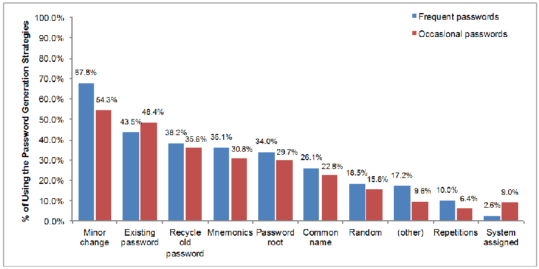
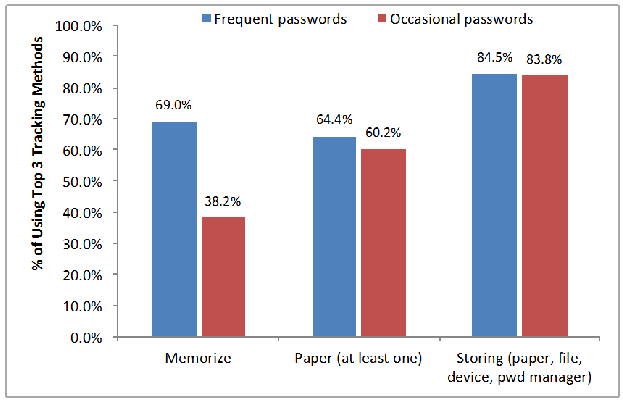
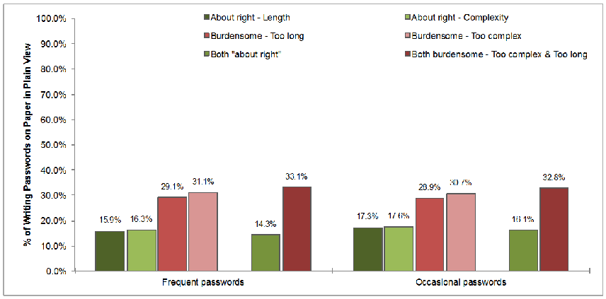
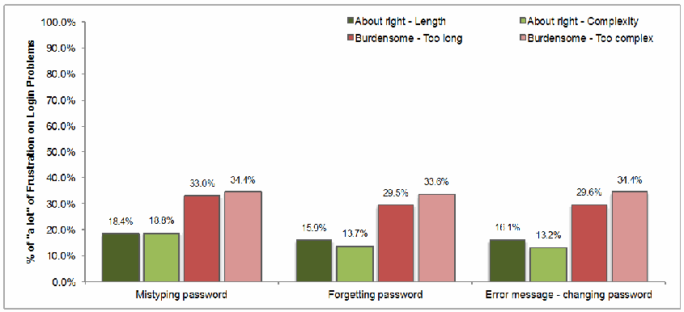

NIST IR 7991 日本語訳
英語タイトル : United States Federal Employees' Password Management Behaviors – A Department of Commerce Case Study日本語タイトル : 米国連邦職員のパスワード管理行動：商務省の事例研究
公開日 : 2014-04-08
原文URL : https://csrc.nist.gov/pubs/ir/7991/final
翻訳編集 : 自動生成（有志による非公式の日本語訳）, 原文取得日 : 2026-10-31, 訳文 : 331 / 332 ブロック
[要約] NIST IR 7991 は、米国商務省（DOC）の職員を対象としたオンライン調査をもとに、連邦職員のパスワード管理行動を報告する事例研究です。調査は、政府の職場環境におけるエンドユーザーのパスワード管理とコンピュータセキュリティに対する態度のデータを収集するために設計され、2010 年 6 月から 2011 年 6 月までに DOC の各局の職員から集めたデータに焦点を当てています。パスワードの使用、パスワードのポリシーや要件に対する態度、パスワードの生成と追跡の方法、ログインの問題、パスワードが危殆化した場合に想定される結果、理想的なログインプロセスなどの結果を示します。結論では、サイバーセキュリティポリシーの根拠に対する職員の態度が職員の行動と経験に影響すること、複雑さや長さなどのパスワード要件に対する前向きな態度がより安全な行動と相関することを、主な知見として挙げています。
NISTIR 7991
NISTIR 7991
United States Federal Employees’ Password Management Behaviors – a Department of Commerce Case Study
米国連邦職員のパスワード管理行動 – 商務省の事例研究
Yee-Yin Choong
Mary Theofanos
Hung-Kung Liu
Yee-Yin Choong
Mary Theofanos
Hung-Kung Liu
http://dx.doi.org/10.6028/NIST.IR.7991
http://dx.doi.org/10.6028/NIST.IR.7991
［NIST のロゴ。公的な標章のため、この非公式サイトには掲載していません。原本 PDF を参照してください。］
NISTIR 7991
NISTIR 7991
United States Federal Employees’ Password Management Behaviors – a Department of Commerce Case Study
米国連邦職員のパスワード管理行動 – 商務省の事例研究
Yee-Yin Choong
Information Access Division
Information Technology Laboratory
Yee-Yin Choong
Information Access Division
Information Technology Laboratory
Mary Theofanos
Office of Data and Informatics
Material Measurement Laboratory
Mary Theofanos
Office of Data and Informatics
Material Measurement Laboratory
Hung-Kung Liu
Statistical Engineering Division
Information Technology Laboratory
Hung-Kung Liu
Statistical Engineering Division
Information Technology Laboratory
http://dx.doi.org/10.6028/NIST.IR.7991
http://dx.doi.org/10.6028/NIST.IR.7991
March 2014
2014年3月
U.S. Department of Commerce
Penny Pritzker, Secretary
米国商務省
Penny Pritzker 長官
National Institute of Standards and Technology
Patrick D. Gallagher, Under Secretary of Commerce for Standards and Technology and Director
国立標準技術研究所
Patrick D. Gallagher、商務次官（標準・技術担当）兼所長
Table of Contents
目次
List of Tables
表の一覧
List of Figures
図の一覧
1 INTRODUCTION
1 はじめに
Passwords are still the most widely used authentication mechanism within the federal government. Alternatives exist such as the Personal Identity Verification (PIV) (2006) card mandated by Homeland Security Presidential Directive 12 (HSPD-12, 2004) which defines requirements for a standardized, United States (US) government-wide identification mechanism for gaining authorized access to federal facilities and federal information systems. The PIV card is universally used by federal employees for physical access, but the PIV card has still not universally replaced passwords for logical access. Even for those employees who use the PIV card for logical access, additional passwords are still required by many systems.
パスワードは、連邦政府内で今も最も広く使われている認証の仕組みです。代替手段としては、国土安全保障大統領指令 12（HSPD-12、2004 年）が義務付けた個人識別検証（PIV）（2006 年）カードなどがあり、これは、連邦施設と連邦情報システムへの許可されたアクセスを得るための、米国政府全体で標準化された識別の仕組みの要件を定めています。PIV カードは、物理アクセスには連邦職員に広く使われていますが、論理アクセスについては、PIV カードがパスワードに全面的に置き換わるには至っていません。論理アクセスに PIV カードを使用する職員であっても、多くのシステムでは追加のパスワードが依然として必要です。
The literature describes many security and usability challenges with passwords. According to ISO standards [ISO 13407, 1999], usability is defined as “the extent to which a product can be used by specified users to achieve specified goals with effectiveness, efficiency and satisfaction in a specified context of use.” Adams and Sasse (1999) identified three usability characteristics that users want from passwords: passwords should be easy to remember, should be able to be used across multiple systems, and should rarely change. But this is in direct conflict with password security policies that require long passwords with high entropy, a unique password for each system, and passwords that users must change frequently. Florencio and Herley (2007) identified that the average web user has about 25 accounts that require passwords and a typical user types an average of 8 passwords per day. Zhang et al., 2009 identified that users must also attempt to remember the myriad of password policies for each of these accounts resulting in “access amnesia” and Adam et al., 1997 noted that this resulted in password interference.
文献は、パスワードに関する多くのセキュリティ上およびユーザビリティ上の課題を記述しています。ISO 標準 [ISO 13407, 1999] によれば、ユーザビリティは「特定の利用状況において、特定のユーザーが特定の目標を、有効性、効率、満足度をもって達成するために、製品を使用できる程度」と定義されます。Adams と Sasse（1999）は、ユーザーがパスワードに求める 3 つのユーザビリティ特性を特定しました。すなわち、パスワードは覚えやすく、複数のシステムで使用でき、ほとんど変更しなくてよいものであるべきというものです。しかし、これは、エントロピーの高い長いパスワード、システムごとに固有のパスワード、ユーザーが頻繁に変更しなければならないパスワードを求めるパスワードのセキュリティポリシーと真っ向から対立します。Florencio と Herley（2007）は、平均的な Web ユーザーが、パスワードを必要とするアカウントを約 25 個持ち、典型的なユーザーが 1 日に平均 8 個のパスワードを入力していることを明らかにしました。Zhang ら（2009）は、ユーザーが、これらのアカウントごとの無数のパスワードポリシーも覚えようとしなければならず、その結果として「アクセス健忘」が生じることを明らかにし、Adam ら（1997）は、それがパスワードの干渉をもたらすことを指摘しました。
Studies of password habits include surveys of organizational and individual behaviors of users. Password behaviors at work within organizations include studies by Adams and Sassse (1999). And, a large-scale observational study of password use and reuse by Florencio and Herley (2007) explored the password use and habits of individuals. A digest of recent surveys of password habits can be found at PasswordResearch.com1 (http://www.passwordresearch.com). In general, these studies examine how users use and re-use passwords focusing on if users change passwords frequently, use complex passwords, and use short passwords. In addition, empirical studies have examined password selection, recall and memorability (Campbell et al., 2011; Haque et al., 2013; Vu et al., 2007; Yan et al. 2004; Zhang et al., 2009).
パスワード習慣に関する研究には、組織内および個人のユーザー行動を調査したものがあります。組織内の職場でのパスワード行動については、Adams と Sassse（1999）による研究があります。また、Florencio と Herley（2007）は、パスワードの使用と再利用を大規模に観察し、個人のパスワードの使用や習慣を調査しました。パスワード習慣に関する最近の調査の要約は、PasswordResearch.com1（http://www.passwordresearch.com）で見ることができます。一般に、これらの研究は、ユーザーがパスワードをどのように使用し、再利用するかを調べ、パスワードを頻繁に変更するか、複雑なパスワードや短いパスワードを使用するかに焦点を当てています。加えて、実証的研究では、パスワードの選択、想起、記憶しやすさが調べられています（Campbell ら、2011 年、Haque ら、2013 年、Vu ら、2007 年、Yan ら、2004 年、Zhang ら、2009 年）。
Few studies have focused on US federal government employees’ password habits. Zviran and Haga (1999) investigated password characteristics such as length, composition, and password selection methods of the Department of Defense employees from a particular installation in California in 1999. At that time, there were no requirements on password length, complexity, and password change frequency. While these findings were groundbreaking at the time, government security policies and practices have changed significantly. Today within the federal government, password policies that enforce security practices with respect to minimum password length (anywhere from 12 to 16 characters or higher), complexity (alpha-numeric, upper and lower case and special symbols) and frequent change intervals are in place for all accounts. Since the federal government password policies predetermine these factors, we wanted to study users’ password management behaviors, perceptions, attitudes and experiences with the policies in order to develop effective password policies that take into account security and usability considerations. Thus we developed a survey to collect data on users’ password management behaviors with respect to their work accounts and not personal or social accounts.
米国連邦政府職員のパスワードの習慣に焦点を当てた研究は、ほとんどありません。Zviran と Haga（1999）は、1999 年に、カリフォルニア州の特定の施設の国防総省の職員を対象に、長さ、構成、パスワードの選択方法といったパスワードの特性を調査しました。当時は、パスワードの長さ、複雑さ、変更頻度についての要件はありませんでした。これらの知見は当時としては画期的でしたが、政府のセキュリティポリシーと実践は大きく変化しています。現在の連邦政府内では、パスワードの最小の長さ（12〜16 文字、またはそれ以上）、複雑さ（英数字、大文字と小文字、特殊記号）、頻繁な変更間隔に関するセキュリティの実践を強制するパスワードポリシーが、すべてのアカウントに設けられています。連邦政府のパスワードポリシーがこれらの要素をあらかじめ決めているため、私たちは、セキュリティとユーザビリティの考慮事項を踏まえた効果的なパスワードポリシーを策定するために、ユーザーのパスワード管理行動、ポリシーに対する認識、態度、経験を調べたいと考えました。そこで私たちは、個人用やソーシャルのアカウントではなく、業務用アカウントに関するユーザーのパスワード管理行動のデータを収集するための調査を開発しました。
The survey instrument was designed to explore the relationships between the length, complexity, and change interval of passwords and password management behaviors and security behaviors. For instance: are there possible associations amongst users’ attitudes towards password policy requirements of length and complexity and users’ password generation strategies or users’ propensity to store and “write down” passwords or how frequently users experience login problems? Previous research reveals little about users’ attitudes about the password policy requirements and password characteristics and behaviors.
この調査の質問票は、パスワードの長さ、複雑さ、変更間隔と、パスワード管理行動およびセキュリティ行動との関係を調べるように設計されました。たとえば、長さと複雑さというパスワードポリシー要件に対するユーザーの態度と、ユーザーのパスワード生成戦略、ユーザーがパスワードを保存して「書き留める」傾向、あるいはユーザーがログインの問題を経験する頻度とのあいだに、関連がある可能性はあるでしょうか。これまでの研究からは、パスワードポリシー要件、パスワードの特性、行動に対するユーザーの態度については、ほとんどわかっていません。
2 METHODOLOGY
2 方法論
We designed an on-line survey to collect data on end-users’ password management and their attitudes toward computer security in a government work environment. This paper focuses on the data collected from employees of the Bureaus of the US Department of Commerce (DOC) between June 2010 and June 2011. The survey was sent out via email to DOC employees asking for voluntary participation. They were informed that their responses would be collected anonymously to reduce possible social desirability bias and to encourage more honest responses (Ong and Weiss, 2000). To ensure anonymity, the chief information officer of each participating DOC bureau agreed that no personal identifiable information (such as IP address of the respondent’s computer, email address, etc.) was collected or provided to us.
私たちは、政府の職場環境における、エンドユーザーのパスワード管理と、コンピュータセキュリティに対する態度についてのデータを収集するために、オンライン調査を設計しました。本論文は、2010 年 6 月から 2011 年 6 月までに、米国商務省（DOC）の各局の職員から収集したデータに焦点を当てています。調査は、自主的な参加を求めて、電子メールで DOC の職員に送付されました。職員には、社会的望ましさバイアスの可能性を減らし、より正直な回答を促すために、回答が匿名で収集されることが伝えられました（Ong と Weiss、2000 年）。匿名性を確保するため、参加した DOC の各局の最高情報責任者は、個人を特定できる情報（回答者のコンピュータの IP アドレス、電子メールアドレスなど）が収集されず、私たちにも提供されないことに同意しました。
2.1 PROCEDURE
2.1 手順
We selected the National Institute of Standards and Technology (NIST) to run a pilot of the survey. The pilot was rolled out one laboratory at a time. We sent out an email with a hyperlink to the survey asking for participation in a survey related to password management and usability. During the first laboratory rollout, it was brought to our attention that employees are very sensitive to inquiries related to passwords. The NIST security office received several reports from employees who thought they had received an email that was a phishing scam trying to elicit passwords. Employees were reluctant to click on the embedded link within the email. To resolve this issue, we shifted to a two-step approach: (1) laboratory management sent out an email informing employees about the research and to expect an email from the researchers; (2) we then sent out the email with the link asking for participation. No security reports were filed after the adoption of this two-step approach.
私たちは、調査の試行を実施するために、国立標準技術研究所（NIST）を選びました。試行は、1 つの研究所ずつ順に展開されました。私たちは、パスワード管理とユーザビリティに関する調査への参加を求める電子メールを、調査へのハイパーリンクとともに送付しました。最初の研究所での展開の際、職員がパスワードに関する問い合わせに非常に敏感であることが、私たちの注意を引きました。NIST のセキュリティ部門は、パスワードを聞き出そうとするフィッシング詐欺の電子メールを受け取ったと考えた職員から、いくつかの報告を受けました。職員は、電子メール内に埋め込まれたリンクをクリックすることをためらっていました。この問題を解決するため、私たちは 2 段階の手法に切り替えました。（1）研究所の管理部門が、研究について職員に知らせ、研究者からの電子メールを待つよう伝える電子メールを送付し、（2）その後、私たちが参加を求めるリンク付きの電子メールを送付します。この 2 段階の手法を採用した後は、セキュリティに関する報告は提出されませんでした。
After the NIST pilot, the survey was conducted at nine other DOC bureaus. A similar two-step approach was utilized with a security officer from each participating bureau first sending out an email informing employees about an upcoming research survey on password management, and then a coordinator from each participating DOC bureau sending an email with a link to the research survey to its employees.
NIST での試行の後、調査はほかの 9 つの DOC の局で実施されました。同様の 2 段階の手法が用いられ、参加した各局のセキュリティ担当者がまず、今後行われるパスワード管理に関する調査研究について職員に知らせる電子メールを送付し、その後、参加した各 DOC の局の調整担当者が、その局の職員に、調査研究へのリンク付きの電子メールを送付しました。
While completing the survey, the respondents were instructed to think about only work-related accounts that require authentications. The survey consists of nineteen questions related to password management and computer security and six demographic questions (see Appendix). These questions cover topics such as: number of work-related accounts requiring passwords, number of frequently2 used passwords, number of occasionally used passwords, attitudes toward the bureau’s password requirements (length, complexity, and change interval), password generation strategies, factors affecting password generation, time spent on generating passwords, password management, login problems, opinions on compromised passwords, and perception on cybersecurity training. On average, it took those who elected to take the survey about fifteen minutes to complete.
調査に回答する際、回答者は、認証が必要な業務関連のアカウントだけについて考えるよう指示されました。この調査は、パスワード管理とコンピュータセキュリティに関する 19 の質問と、人口統計に関する 6 つの質問（付録を参照）で構成されています。これらの質問は、パスワードを必要とする業務関連のアカウントの数、頻繁に2使用するパスワードの数、ときどき使用するパスワードの数、局のパスワード要件（長さ、複雑さ、変更間隔）に対する態度、パスワードの生成戦略、パスワードの生成に影響する要因、パスワードの生成に費やす時間、パスワード管理、ログインの問題、パスワードの危殆化に関する意見、サイバーセキュリティトレーニングに対する認識といった話題を対象としています。調査への回答を選択した人が回答を終えるまでに、平均で約 15 分かかりました。
2.2 RESPONDENTS
2.2 回答者
At the time of the research, there were an estimated 38 000 DOC employees and a total of 4 573 (~ 12.0 %) DOC employees completed the survey. The major demographic characteristics of the respondents are listed in Table 1.
研究の時点で、DOC の職員は推定 38 000 人おり、合計 4 573 人（約 12.0 %）の DOC 職員が調査に回答しました。回答者の主な人口統計学的特性を表 1 に示します。
Table 1 Respondents' Demographic Characteristics
表 1 回答者の人口統計学的特性
| Characteristics | Category | % | Characteristics | Category | % |
|---|---|---|---|---|---|
| Age | <= 25 26-35 36-45 46-55 56-65 >= 66 (not specified) | 3.5 % 20.5 % 23.1 % 29.8 % 18.6 % 2.4 % 2.0 % | Federal Service Length (years) | < 1 1-3 4-5 6-10 11-14 15 -20 > 20 (not specified) | 5.5 % 15.1 % 11.5 % 7.7 % 13.4 % 11.3 % 35.1 % 0.5 % |
| Gender | Male Female (not specified) | 57.5 % 39.2 % 3.3 % | Job Levels | Executive Manager Supervisor Team lead Non-supervisor (not specified) | 1.9 % 9.6 % 13.8 % 11.5 % 62.6 % 0.6 % |
| Education | High school Associate Bachelor Master Doctorate Professional degree (not specified) | 7.0 % 5.3 % 34.4 % 31.7 % 15.6 % 2.7 % 3.3 % | Occupations | Physical science Information technology Biological science Mathematics and Statistics General administration, clerical & office services Engineering & architecture Accounting and budget (Other) | 25.7 % 14.3 % 9.5 % 8.2 % 7.1 % 4.6 % 3.4 % 27.2 % |
| Computer Skill (self reported) | Novice Average Advanced Expert (not specified) | 0.5 % 29.0 % 50.6 % 19.5 % 0.3 % |
| 特性 | 区分 | % | 特性 | 区分 | % |
|---|---|---|---|---|---|
| 年齢 | <= 25 26-35 36-45 46-55 56-65 >= 66 （未回答） | 3.5 % 20.5 % 23.1 % 29.8 % 18.6 % 2.4 % 2.0 % | 連邦政府での勤続年数（年） | < 1 1-3 4-5 6-10 11-14 15 -20 > 20 （未回答） | 5.5 % 15.1 % 11.5 % 7.7 % 13.4 % 11.3 % 35.1 % 0.5 % |
| 性別 | 男性 女性 （未回答） | 57.5 % 39.2 % 3.3 % | 職位 | 幹部 管理職 監督者 チームリーダー 非監督者 （未回答） | 1.9 % 9.6 % 13.8 % 11.5 % 62.6 % 0.6 % |
| 学歴 | 高校 準学士 学士 修士 博士 専門職学位 （未回答） | 7.0 % 5.3 % 34.4 % 31.7 % 15.6 % 2.7 % 3.3 % | 職種 | 物理科学 情報技術 生物科学 数学・統計学 一般事務・事務サービス 工学・建築 会計・予算 （その他） | 25.7 % 14.3 % 9.5 % 8.2 % 7.1 % 4.6 % 3.4 % 27.2 % |
| コンピュータスキル（自己申告） | 初心者 平均的 上級 エキスパート （未回答） | 0.5 % 29.0 % 50.6 % 19.5 % 0.3 % |
3 RESULTS
3 結果
3.1 PASSWORD USAGE
3.1 パスワードの使用
On average, DOC employees had nine (range: 1 to 400) accounts at work that require logins. Due to the wide range of the data, medians were used for calculating the central tendency. The median of frequently used passwords was five (range: 0 to 105) and the median of occasionally used passwords was four (range: 0 to 245). Further breaking down the number of accounts requiring logins, showed that 21.8 % of the employees had less than or equal to five accounts, 41.5 % had between six to ten accounts, 25.4 % had between 11 to 20 accounts, and 11.0 % had more than 20 accounts.
DOC の職員は、平均で、業務でログインが必要なアカウントを 9 個（範囲: 1〜400）持っていました。データの範囲が広いため、中心傾向の算出には中央値を使用しました。頻繁に使用するパスワードの中央値は 5 個（範囲: 0〜105）で、ときどき使用するパスワードの中央値は 4 個（範囲: 0〜245）でした。ログインが必要なアカウントの数をさらに分類すると、職員の 21.8 % が 5 個以下、41.5 % が 6〜10 個、25.4 % が 11〜20 個、11.0 % が 20 個を超えるアカウントを持っていました。
3.2 ATTITUDES TOWARD PASSWORD POLICY AND REQUIREMENTS
3.2 パスワードのポリシーと要件に対する態度
In general, employees thought that their bureau has clearly communicated its password policy (very clear – 53.8 %, somewhat clear – 33.1 %). Although “using the same password for different accounts” is prohibited in most bureaus’ policies, the data showed otherwise (always – 17.9 %, more than half of my accounts – 19.8 %, about half of my accounts – 18.9 %).
一般に、職員は、自局がパスワードポリシーを明確に伝えていると考えていました（非常に明確 – 53.8 %、ある程度明確 – 33.1 %）。ほとんどの局のポリシーでは「異なるアカウントで同じパスワードを使用すること」が禁止されているものの、データはそうでないことを示しました（常に – 17.9 %、アカウントの半数超 – 19.8 %、アカウントのおよそ半数 – 18.9 %）。
Employees viewed the password requirements as burdensome: too long, too complex, and change too often. Over 70 % of the respondents preferred that a password stays valid for longer than 90 days before they have to change it. The responses are detailed in Table 2.
職員は、パスワード要件を、長すぎる、複雑すぎる、変更が頻繁すぎるという点で、負担が大きいと捉えていました。回答者の 70 % 超が、パスワードを変更しなければならなくなるまでに、90 日より長く有効であることを望んでいました。回答の詳細を表 2 に示します。
Table 2 Attitudes toward Password Requirements
表 2 パスワード要件に対する態度
| Password Length | % | Password Complexity | % | Preferred Password Lifespan | % |
|---|---|---|---|---|---|
| Too long About right Too short No opinion/no response | 56.9 % 36.0 % 0.9 % 6.2 % | Too complex About right Too simple No opinion/no response | 50.7 % 44.1 % 0.6 % 4.6 % | 30 days or less 31-60 days 61-90 days 91-120 days 121-180 days 181 days or more No opinion/no response | 1.3 % 5.8 % 18.7 % 18.2 % 17.3 % 35.0 % 3.7 % |
| パスワードの長さ | % | パスワードの複雑さ | % | 望ましいパスワードの有効期間 | % |
|---|---|---|---|---|---|
| 長すぎる ちょうどよい 短すぎる 意見なし／無回答 | 56.9 % 36.0 % 0.9 % 6.2 % | 複雑すぎる ちょうどよい 単純すぎる 意見なし／無回答 | 50.7 % 44.1 % 0.6 % 4.6 % | 30 日以下 31-60 日 61-90 日 91-120 日 121-180 日 181 日以上 意見なし／無回答 | 1.3 % 5.8 % 18.7 % 18.2 % 17.3 % 35.0 % 3.7 % |
3.3 PASSWORD MANAGEMENT
3.3 パスワード管理
3.3.1 Time spent on password generation
3.3.1 パスワードの生成に費やす時間
We asked respondents to estimate3: the average time spent on generating a password (\(\mathrm{t}_{freq.avg}\) for the frequently used passwords, and \(\mathrm{t}_{occ.avg}\) for the occasionally used passwords), and the longest time ever spent on generating a password (\(\mathrm{t}_{freq.max}\) and \(\mathrm{t}_{occ.max}\), respectively). If the number of frequently used passwords is \(\mathrm{n}_{freq}\) and the number of occasionally used passwords is \(\mathrm{n}_{occ}\), we can estimate the total average time spent (\(\mathrm{T}_{freq.avg}\) and \(\mathrm{T}_{occ.avg}\)) on generating passwords and the worst scenario (\(\mathrm{T}_{freq.max}\) and \(\mathrm{T}_{occ.max}\)) when each password takes the longest time to generate, for each respondent (i), where
私たちは、回答者に、パスワードの生成に費やす平均時間（頻繁に使用するパスワードについては \(\mathrm{t}_{freq.avg}\)、ときどき使用するパスワードについては \(\mathrm{t}_{occ.avg}\)）と、パスワードの生成に費やした最長の時間（それぞれ \(\mathrm{t}_{freq.max}\) と \(\mathrm{t}_{occ.max}\)）を見積もる3よう求めました。頻繁に使用するパスワードの数が \(\mathrm{n}_{freq}\)、ときどき使用するパスワードの数が \(\mathrm{n}_{occ}\) である場合、各回答者（i）について、パスワードの生成に費やす合計平均時間（\(\mathrm{T}_{freq.avg}\) と \(\mathrm{T}_{occ.avg}\)）と、各パスワードの生成に最長の時間がかかる場合の最悪のシナリオ（\(\mathrm{T}_{freq.max}\) と \(\mathrm{T}_{occ.max}\)）を推定できます。ここで
We can then find the means for \(\mathrm{T}_{freq,avg}\), \(\mathrm{T}_{freq,max}\), \(\mathrm{T}_{occ,avg}\), and \(\mathrm{T}_{occ,max}\), across all respondents. We can also calculate for the worst scenario how much time employees may spend on generating passwords annually based on a 90-day renewal cycle (i.e., four password changes a year), or a 60-day renewal cycle (i.e. six password changes a year). If every password takes the longest time to generate, an employee can spend from 12.4 hours (or 1.5 business days) at a 90-day cycle to 18.6 hours (or 2.25 business days) at a 60-day cycle each year generating passwords for their work. The results are in Table 3.
次に、すべての回答者にわたる \(\mathrm{T}_{freq,avg}\)、\(\mathrm{T}_{freq,max}\)、\(\mathrm{T}_{occ,avg}\)、\(\mathrm{T}_{occ,max}\) の平均を求めることができます。また、最悪のシナリオについて、90 日の更新周期（すなわち年 4 回のパスワード変更）または 60 日の更新周期（すなわち年 6 回のパスワード変更）に基づいて、職員がパスワードの生成に年間どれだけの時間を費やし得るかも計算できます。すべてのパスワードの生成に最長の時間がかかる場合、職員は、業務用のパスワードの生成に、90 日周期で年間 12.4 時間（または 1.5 営業日）から、60 日周期で年間 18.6 時間（または 2.25 営業日）を費やし得ます。結果を表 3 に示します。
Table 3 Time Spent on Generating Passwords
表 3 パスワードの生成に費やす時間
| Password type | Averages | Time Spent Annually (worst scenario) | |
|---|---|---|---|
| Hours/employee/year (90-day cycle) | Hours/employee/year (60-day cycle) | ||
| Frequently used passwords | Mean (\(\mathrm{T}_{freq,avg}\)) = 28.4 (min) Mean (\(\mathrm{T}_{freq,max}\)) = 98.5 (min) | 6.6 (h) | 9.9 (h) |
| Occasionally used passwords | Mean (\(\mathrm{T}_{occ,avg}\)) = 23.5 (min) Mean (\(\mathrm{T}_{occ,max}\)) = 86.6 (min) | 5.8 (h) | 8.7 (h) |
| Total | 12.4 (h) | 18.6 (h) | |
| パスワードの種類 | 平均 | 年間に費やす時間（最悪のシナリオ） | |
|---|---|---|---|
| 時間／職員／年 （90 日周期） | 時間／職員／年 （60 日周期） | ||
| 頻繁に使用するパスワード | 平均（\(\mathrm{T}_{freq,avg}\)）= 28.4（分） 平均（\(\mathrm{T}_{freq,max}\)）= 98.5（分） | 6.6（時間） | 9.9（時間） |
| ときどき使用するパスワード | 平均（\(\mathrm{T}_{occ,avg}\)）= 23.5（分） 平均（\(\mathrm{T}_{occ,max}\)）= 86.6（分） | 5.8（時間） | 8.7（時間） |
| 合計 | 12.4（時間） | 18.6（時間） | |
3.3.2 Considerations affecting password generation
3.3.2 パスワードの生成に影響する考慮事項
Respondents answered the questions regarding the level of importance of each of the five factors (Easy to enter/type, Easy to remember, Strong, Synchronized with passwords for other accounts, and Compliant with the password requirements) that they considered when generating a password. The last factor Compliant was intentionally placed in the question to learn how important it is to respondents even though a password has to be compliant to be accepted by a system. These questions used a semantic-distance scale from “Not at all important” to “Very important.” The percentage of respondents choosing “Very important” for each factor is in Table 4.
回答者は、パスワードを生成する際に考慮する 5 つの要因（入力しやすい、覚えやすい、強力である、ほかのアカウントのパスワードと同期している、パスワード要件に準拠している）のそれぞれの重要度に関する質問に回答しました。最後の要因である準拠しているは、パスワードがシステムに受け入れられるためには準拠していなければならないにもかかわらず、回答者にとってどれだけ重要かを知るために、意図的に質問に含められました。これらの質問には、「まったく重要でない」から「非常に重要」までの意味差の尺度を用いました。各要因について「非常に重要」を選んだ回答者の割合を表 4 に示します。
Table 4 Password Generation Considerations – rated “very important”
表 4 パスワード生成の考慮事項 – 「非常に重要」と評価されたもの
| Considerations | Frequently used passwords | Occasionally used passwords |
|---|---|---|
| Easy to remember | 81.0 % | 63.8 % |
| Compliant with the password requirements | 58.3 % | 55.9 % |
| Synchronized with passwords for other accounts | 45.8 % | 36.8 % |
| Easy to enter/type | 38.1 % | 32.3 % |
| Strong | 31.3 % | 28.0 % |
| 考慮事項 | 頻繁に使用するパスワード | ときどき使用するパスワード |
|---|---|---|
| 覚えやすい | 81.0 % | 63.8 % |
| パスワード要件に準拠している | 58.3 % | 55.9 % |
| ほかのアカウントのパスワードと同期している | 45.8 % | 36.8 % |
| 入力しやすい | 38.1 % | 32.3 % |
| 強力である | 31.3 % | 28.0 % |
3.3.3 Password generation strategies
3.3.3 パスワードの生成戦略
Respondents were given a list of password generation strategies and asked to check all that apply when generating their passwords. The results are in Figure 1.
回答者には、パスワードの生成戦略の一覧が示され、パスワードを生成する際に当てはまるものをすべてチェックするよう求められました。結果を図 1 に示します。

パスワード生成戦略ごとに、頻繁に使用するパスワード（青）とときどき使用するパスワード（赤）の割合を比較した棒グラフです。縦軸は「パスワード生成戦略の使用率」（0.0%〜100.0%）です。値（頻繁／ときどき）: 小さな変更 67.8%／54.3%、既存のパスワード 43.5%／48.4%、古いパスワードの再利用 38.2%／35.6%、記憶術 36.1%／30.8%、パスワードの語幹 34.0%／29.7%、一般的な名前 26.1%／22.8%、ランダム 18.5%／15.8%、（その他）17.2%／9.6%、繰り返し 10.0%／6.4%、システムによる割り当て 2.6%／9.0%。
Figure 1 Strategies for generating passwords
図 1 パスワードの生成戦略
3.3.4 Password tracking methods
3.3.4 パスワードの追跡方法
Respondents were given a list of password tracking methods and asked to check all that apply. The results are in Figure 2.
回答者には、パスワードの追跡方法の一覧が示され、当てはまるものをすべてチェックするよう求められました。結果を図 2 に示します。
![Bar chart comparing frequent passwords (blue) and occasional passwords (red). Y-axis: "% of Using the Password Tracking Methods", 0% to 100%. Values (frequent / occasional): Memorize 69% / 38%; Paper - disguised 28% / 23%; Paper - locked location 25% / 24%; Paper - plain view 25% / 25%; Mnemonics 25% / 14%; File - encrypted 19% / 19%; Use "forgot password" feature 17% / 26%; Rely on hints 16% / 17%; File - un-encrypted 13% / 11%; Auto-fill 10% / 8%; Password manager 8% / 8%; (other) 6% / 4%; Electronic device - encrypted 4% / 3%; Electronic device - un-encrypted 3% / 4%; Delegate to someone else 1% / 1%; Share with colleagues 0% / 0%.](assets/ir-7991/p0012-figure-02.png)
パスワードの管理方法ごとに、頻繁に使用するパスワード（青）とときどき使用するパスワード（赤）の割合を比較した棒グラフです。縦軸は「パスワード追跡方法の使用率」（0%〜100%）です。値（頻繁／ときどき）: 記憶する 69%／38%、紙（偽装して記録）28%／23%、紙（施錠された場所に保管）25%／24%、紙（見える状態で記録）25%／25%、記憶術 25%／14%、暗号化したファイル 19%／19%、「パスワードを忘れた場合」機能を使用 17%／26%、ヒントに頼る 16%／17%、暗号化していないファイル 13%／11%、自動入力 10%／8%、パスワードマネージャー 8%／8%、（その他）6%／4%、暗号化した電子機器 4%／3%、暗号化していない電子機器 3%／4%、他者に委任 1%／1%、同僚と共有 0%／0%。
Figure 2 Password tracking methods
図 2 パスワードの追跡方法
3.4 LOGIN PROBLEMS
3.4 ログインの問題
Respondents were given a list of 11 common login problems and asked to indicate whether they had experienced such problems in the past six months and to rate the severity (none, a little, some, or a lot) in terms of perceived frustration level and time wasted. The top six login problems are listed in Table 5.
回答者には、11 件の一般的なログインの問題の一覧が示され、過去 6 か月間にそのような問題を経験したかどうかを示すとともに、認識された不満の度合いと無駄になった時間の観点で、深刻度（なし、少し、ある程度、大いに）を評価するよう求められました。ログインの問題の上位 6 件を表 5 に示します。
Table 5 Top Six Login Problems
表 5 ログインの問題の上位 6 件
| Login Problems | Perceived Frustration Level | Perceived Time Wasted | ||||
|---|---|---|---|---|---|---|
| A lot | Some | (A lot + Some) | A lot | Some | (A lot + Some) | |
| Mistyping password | 26.9 % | 34.4 % | 61.3 % | 14.5 % | 30.4 % | 44.9 % |
| Forgetting password | 24.1 % | 39.9 % | 64.0 % | 16.8 % | 37.5 % | 54.3 % |
| Error message - password change | 24.1 % | 29.3 % | 53.4 % | 13.7 % | 26.2 % | 39.9 % |
| Multiple logins for single task | 22.2 % | 26.0 % | 48.2 % | 15.7 % | 24.6 % | 40.3 % |
| Forgetting which password to use | 21.9 % | 31.3 % | 53.2 % | 13.8 % | 28.2 % | 42.0 % |
| Getting locked out | 19.0 % | 28.8 % | 47.8 % | 18.1 % | 26.7 % | 44.8 % |
| ログインの問題 | 認識された不満の度合い | 認識された無駄になった時間 | ||||
|---|---|---|---|---|---|---|
| 大いに | ある程度 | （大いに＋ある程度） | 大いに | ある程度 | （大いに＋ある程度） | |
| パスワードの打ち間違い | 26.9 % | 34.4 % | 61.3 % | 14.5 % | 30.4 % | 44.9 % |
| パスワードを忘れる | 24.1 % | 39.9 % | 64.0 % | 16.8 % | 37.5 % | 54.3 % |
| エラーメッセージ - パスワード変更 | 24.1 % | 29.3 % | 53.4 % | 13.7 % | 26.2 % | 39.9 % |
| 1 つの作業のための複数回のログイン | 22.2 % | 26.0 % | 48.2 % | 15.7 % | 24.6 % | 40.3 % |
| どのパスワードを使うかを忘れる | 21.9 % | 31.3 % | 53.2 % | 13.8 % | 28.2 % | 42.0 % |
| ロックアウトされる | 19.0 % | 28.8 % | 47.8 % | 18.1 % | 26.7 % | 44.8 % |
3.5 ATTITUDES TOWARD OVERALL CYBERSECURITY AND USABILITY
3.5 サイバーセキュリティ全般とユーザビリティに対する態度
We asked respondents to answer questions regarding their bureau’s cybersecurity training: 93.5 % indicated that their bureau has offered training on cybersecurity, 4.1 % indicated “don’t know” and 1.4 % indicated “no.” Within those respondents who answered “yes,” 58.8 % indicated that the training is useful (21.1 % - “very useful,” and 38.7 % - “somewhat useful”).
私たちは、回答者に、自局のサイバーセキュリティトレーニングに関する質問に答えるよう求めました。93.5 % が自局でサイバーセキュリティのトレーニングが提供されていると回答し、4.1 % が「わからない」、1.4 % が「いいえ」と回答しました。「はい」と回答した回答者のうち、58.8 % が、トレーニングは有用だと回答しました（21.1 % が「非常に有用」、38.7 % が「ある程度有用」）。
When asked about “how secure is the most frequently used password,” respondents perceived their most frequently used password (most likely is their bureau-wide general password) as being completely (20.7 %) or very (43.9 %) secure.
「最も頻繁に使用するパスワードはどれだけ安全か」と尋ねたところ、回答者は、自分が最も頻繁に使用するパスワード（おそらく局全体で使う共通のパスワード）を、完全に（20.7 %）または非常に（43.9 %）安全だと認識していました。
There were two open-ended questions to solicit respondents’ perceived consequences if their work-related passwords were compromised and to learn their views on what constitutes an ideal login process. Qualitative data analysis was performed on the free-text responses to those two questions.
2 つの自由記述の質問があり、業務関連のパスワードが危殆化した場合に想定される結果についての回答者の認識を引き出すとともに、理想的なログインプロセスとは何かについての回答者の見解を知るためのものでした。これら 2 つの質問への自由記述の回答に対して、定性的なデータ分析を行いました。
3.6 PERCEIVED CONSEQUENCES FROM COMPROMISED PASSWORDS
3.6 パスワードが危殆化した場合に想定される結果
Out of the 4 573 respondents, 3 927 provided responses to this question. Responses were analyzed and coded into concepts that were further organized into categories and sub-categories as listed in Table 6. Note that the percentages do not add up to 100 % as the percentages were calculated as the number of instances that a specific concept was mentioned in the responses divided by total number of 3 927 responses.
4 573 人の回答者のうち、3 927 人がこの質問に回答しました。回答は分析され、概念にコード化され、さらに表 6 に示すカテゴリとサブカテゴリに整理されました。割合は、特定の概念が回答中で言及された件数を、回答総数の 3 927 件で割って算出したため、合計が 100 % にならないことに注意してください。
Table 6 Perceived Consequences from Compromised Passwords
表 6 パスワードが危殆化した場合に想定される結果
| Category | Sub-categories | % |
|---|---|---|
| Severity of consequences | ||
| Don't know/not sure | 6.8 % | |
| None | 22.8 % | |
| Minor | 5.3 % | |
| Major | 9.9 % | |
| Depending on accounts, by whom, and to what end | 11.1 % | |
| Data and Information | ||
| Personal info, Identity (PII) exposure/lost | 14.9 % | |
| Data integrity (damaged/lost/modified) | 10.8 % | |
| Sensitive government info at risk (e.g. espionage) | 10.3 % | |
| Emails read/accessed | 3.4 % | |
| Financial fraud/theft (e.g. Thrift Savings; credit card info) | 2.8 % | |
| Time and attendance | 0.5 % | |
| Travel manager (request, reimbursement, etc.) | 0.5 % | |
| Hacking | ||
| Gain unauthorized access to government systems/networks | 7.9 % | |
| Security breach (infrastructure, functioning, security, resources, computer integrity) | 6.5 % | |
| Misuse of account (e.g. send spam emails on behalf of me) | 6.0 % | |
| Malicious software/malware | 2.4 % | |
| Cyber attacks | 0.7 % | |
| National security | 0.3 % | |
| Productivity | ||
| Disrupt business processes, lost productivity (e.g. recover lost data, time spent to reset accounts) | 2.4 % | |
| Reset accounts (e.g. change all passwords) | 1.6 % | |
| Account(s) locked out | 1.3 % | |
| Loss of other passwords | 0.2 % | |
| Cost and Penalty | ||
| Employment reprimand (e.g. disciplinary action, dismissal) | 4.2 % | |
| Security Reprimand/stricter policy/additional training | 1.3 % | |
| Document compromises and investigation | 0.6 % | |
| IT cost to organization (e.g. cleanup after break-in; disruption of systems/networks) | 0.5 % | |
| Legal implications | 0.2 % | |
| Emotional Discomfort | ||
| Embarrassment to Organization | 1.5 % | |
| Personal embarrassment | 1.1 % | |
| Frustration, Inconvenience | 0.8 % | |
| カテゴリ | サブカテゴリ | % |
|---|---|---|
| 結果の深刻度 | ||
| わからない／確信がない | 6.8 % | |
| なし | 22.8 % | |
| 軽微 | 5.3 % | |
| 重大 | 9.9 % | |
| アカウント、誰によるか、どのような目的かによる | 11.1 % | |
| データと情報 | ||
| 個人情報・本人情報（PII）の露出／喪失 | 14.9 % | |
| データの完全性（破損／喪失／改変） | 10.8 % | |
| 政府の機微な情報が危険にさらされる（例: スパイ行為） | 10.3 % | |
| 電子メールが読まれる／アクセスされる | 3.4 % | |
| 金銭的な詐欺／窃盗（例: Thrift Savings、クレジットカード情報） | 2.8 % | |
| 勤怠管理 | 0.5 % | |
| 出張管理（申請、精算など） | 0.5 % | |
| ハッキング | ||
| 政府のシステム／ネットワークへの不正アクセスの獲得 | 7.9 % | |
| セキュリティ侵害（インフラ、機能、セキュリティ、資源、コンピュータの完全性） | 6.5 % | |
| アカウントの悪用（例: 自分になりすましてスパムメールを送信する） | 6.0 % | |
| 悪意のあるソフトウェア／マルウェア | 2.4 % | |
| サイバー攻撃 | 0.7 % | |
| 国家安全保障 | 0.3 % | |
| 生産性 | ||
| 業務プロセスの中断、生産性の低下（例: 失われたデータの復旧、アカウントのリセットに費やす時間） | 2.4 % | |
| アカウントのリセット（例: すべてのパスワードの変更） | 1.6 % | |
| アカウントのロックアウト | 1.3 % | |
| ほかのパスワードの喪失 | 0.2 % | |
| 費用と罰則 | ||
| 雇用上の懲戒（例: 懲戒処分、解雇） | 4.2 % | |
| セキュリティ上の叱責／より厳格なポリシー／追加のトレーニング | 1.3 % | |
| 危殆化と調査の文書化 | 0.6 % | |
| 組織の IT 費用（例: 侵入後の復旧、システム／ネットワークの混乱） | 0.5 % | |
| 法的な影響 | 0.2 % | |
| 感情的な不快感 | ||
| 組織にとっての恥 | 1.5 % | |
| 個人的な恥 | 1.1 % | |
| 不満、不便 | 0.8 % | |
3.7 IDEAL LOGIN PROCESS
3.7 理想的なログインプロセス
There were 4 219 responses to this question. Concepts drawn from the responses covered a wide range of topics. Table 7 lists topics that had at least 150 (i.e., 3.5 %) occurrences in the free-text responses.
この質問には 4 219 件の回答がありました。回答から抽出された概念は、広範な話題にわたっていました。表 7 は、自由記述の回答に 150 件以上（すなわち 3.5 %）出現した話題を挙げています。
Table 7 Main Concepts for Ideal Login Process
表 7 理想的なログインプロセスの主な概念
| Category | Sub-categories | % |
|---|---|---|
| Changes to current login process | ||
| Single signon | 39.1 % | |
| Keep current process (same or similar) | 4.1 % | |
| Authentication factors | ||
| What users are | Biometrics (modality unspecified) | 8.4 % |
| Fingerprint | 15.6 % | |
| Iris | 3.8 % | |
| What users have | Smart card or badge | 18.2 % |
| What users know | Username + password | 4.7 % |
| PIN | 5.3 % | |
| Policy and Requirements | ||
| Balance between user aspects (simple, quick and easy) and security aspects | 4.1 % | |
| Reasonable and shorter password length | 8.8 % | |
| Less frequent password change cycle | 10.1 % | |
| カテゴリ | サブカテゴリ | % |
|---|---|---|
| 現在のログインプロセスの変更 | ||
| シングルサインオン | 39.1 % | |
| 現在のプロセスを維持（同じまたは類似） | 4.1 % | |
| 認証要素 | ||
| ユーザーが何であるか | 生体認証（モダリティ不特定） | 8.4 % |
| 指紋 | 15.6 % | |
| 虹彩 | 3.8 % | |
| ユーザーが何を持っているか | スマートカードまたはバッジ | 18.2 % |
| ユーザーが何を知っているか | ユーザー名＋パスワード | 4.7 % |
| PIN | 5.3 % | |
| ポリシーと要件 | ||
| ユーザー面（単純、迅速、容易）とセキュリティ面とのバランス | 4.1 % | |
| 妥当で、より短いパスワードの長さ | 8.8 % | |
| パスワード変更周期の頻度を下げる | 10.1 % | |
4 DISCUSSION
4 考察
4.1 PASSWORD INTERFERENCE
4.1 パスワードの干渉
From the results, we learn that US employees have about nine passwords that they need to manage at work. While the average user has nine accounts, alarmingly there is about 25 % of the DOC employees have between 11 and 20 accounts that they need to manage at work. We find that respondents spend quite a lot of time just generating passwords when old ones expire. We realize that the time to manage those passwords can grow significantly when we start thinking about the entire user password management lifecycle: generation, maintenance/tracking, and authentication (i.e. entering/typing the passwords numerous times throughout each work day). Besides time, there is also an economic or productivity impact as employees have to shift away from their main tasks (Monsell , 2003; Czerwinski, et al. 2004) to attend to the activities required to manage their passwords such as generating and keeping track of their passwords and logging into accounts/systems constantly. Steves et al. (2013) reported from their diary study that, on average, a user performed logins 23 times in a typical workday. These password management activities are disruptive to their work and can impact employees’ productivity.
結果から、米国の職員が業務で管理する必要があるパスワードは約 9 個であることがわかります。平均的なユーザーのアカウント数は 9 個ですが、驚くべきことに、DOC の職員の約 25 % が、業務で管理する必要のあるアカウントを 11〜20 個持っています。回答者は、古いパスワードの期限が切れたときに、パスワードの生成だけにかなりの時間を費やしていることがわかります。ユーザーのパスワード管理のライフサイクル全体、すなわち、生成、保守・追跡、認証（すなわち、毎日の勤務を通じてパスワードを何度も入力すること）を考え始めると、それらのパスワードの管理にかかる時間が大幅に増える可能性があることがわかります。時間のほかにも、職員は、パスワードの生成や追跡、アカウントやシステムへの絶え間ないログインなど、パスワード管理に必要な活動に対応するために、主要な業務から注意をそらさなければならない（Monsell、2003 年、Czerwinski ら、2004 年）ため、経済面や生産性への影響もあります。Steves ら（2013）は、日記研究から、典型的な勤務日にユーザーが平均 23 回ログインしていたと報告しています。これらのパスワード管理活動は、業務を妨げ、職員の生産性に影響を与え得ます。
Although the bureaus have done a good job on communicating their password policies to their employees, these policies undermine employee productivity and result in behaviors that actually lower security. The password requirements have become more and more stringent (long passwords, complex composition rules, and frequent change cycles) over the past decade and have imposed a huge burden on the end-users. Many respondents have expressed their frustration toward the requirements. One stated, “I understand that for ‘security’ reasons it is good to change a password - but seriously are we all expected to magically remember 12 different passwords, most of which are 10 charecters[sic] long, and can't look like a word (I agree with the reason for the complexity - it just hard on the user).” Another respondent said, “Security has become so complex, it's interfering with being able to do a job efficiently.”
各局は、パスワードポリシーを職員に伝えることを十分に行っていますが、これらのポリシーは、職員の生産性を損ない、実際にはセキュリティを低下させる行動を招いています。パスワード要件は、過去 10 年間でますます厳格になり（長いパスワード、複雑な構成規則、頻繁な変更周期）、エンドユーザーに大きな負担を課してきました。多くの回答者が、要件に対する不満を表明しています。ある回答者は次のように述べました。「『セキュリティ』上の理由でパスワードを変更するのは良いことだと理解していますが、本気で、私たち全員が、12 個の異なるパスワードを魔法のように覚えていることが期待されているのでしょうか。そのほとんどは 10 文字の長さで、単語のように見えてはいけません（複雑さの理由には同意します。ただ、ユーザーには厳しいのです）。」別の回答者は、「セキュリティはあまりに複雑になり、仕事を効率よくこなすことの妨げになっている」と述べました。
4.2 TOP CONSIDERATION – EASY TO REMEMBER
4.2 最優先の考慮事項 – 覚えやすさ
When generating passwords, Easy to remember is the most important consideration: 81.0 % for frequently used passwords and 63.8 % for occasionally used passwords. Compliant comes as the second most important consideration with 58.3 % and 55.9 % for frequently used passwords and occasionally used passwords, respectively. One would expect a higher percentage for Compliant as the systems would reject any non-compliant passwords. However, there are only a little over 50 % of the respondents who view Compliant as very important during the password generation process. As one respondent put it, “Compliance requirement is very important only because it's required.” Interestingly, Strong is the least important factor that only 31.3 % choose “Very important” for the frequently used passwords and 28.0 % for the occasionally used passwords. One respondent explained the phenomena perfectly, “The password requirements make the password hard enough for me to remember that I am not worrying about if someone can crack it as much as if I will be able to use it.”
パスワードを生成する際、覚えやすいことが最も重要な考慮事項です（頻繁に使用するパスワードで 81.0 %、ときどき使用するパスワードで 63.8 %）。準拠していることが 2 番目に重要な考慮事項です（頻繁に使用するパスワードとときどき使用するパスワードで、それぞれ 58.3 % と 55.9 %）。システムは準拠していないパスワードを拒否するため、準拠していることについては、より高い割合が予想されます。しかし、パスワードの生成プロセスで準拠していることを非常に重要だと考える回答者は、50 % をわずかに超える程度にすぎません。ある回答者は、「準拠の要件が非常に重要なのは、それが要求されているからにすぎない」と述べました。興味深いことに、強力であることは最も重要度の低い要因であり、「非常に重要」を選んだのは、頻繁に使用するパスワードで 31.3 %、ときどき使用するパスワードで 28.0 % にすぎません。ある回答者は、この現象を完璧に説明しました。「パスワード要件のせいで、パスワードは覚えるのが十分に難しくなっており、誰かにそれを破られるかどうかよりも、自分がそれを使えるかどうかを心配しています。」
Minor change, existing password, and recycle old password are the top three strategies used by the employees. It is apparent that employees are trying to minimize the need to memorize new information that adds to their already cluttered memory of multiple passwords.
わずかな変更、既存のパスワード、古いパスワードの再利用が、職員が使う上位 3 つの戦略です。職員が、すでに複数のパスワードで雑然としている記憶に加わる、新しい情報を暗記する必要を最小限にしようとしていることは明らかです。
4.3 PASSWORDS “WRITTEN DOWN” BESIDE MEMORIZATION
4.3 記憶に加えて「書き留められる」パスワード
When people have more information than they can hold in their memory, it is impractical and unreasonable to forbid the use of tools to keep track of the information. As we learn from the results, many respondents (69.0 %) use memorize to keep track of their frequently used passwords, but many fewer (38.2 %) can do so with their occasionally used passwords. Respondents have to use other mechanisms to manage their passwords, such as writing them on paper, saving them in a file, password managers, or electronic devices. We recoded the data to two new variables: (1) paper (at least one) which counts the occurrences of respondents checking at least one among paper-disguised, paper – locked location, and paper – plain view; and (2) storing which counts the occurrences of respondents checking at least one from any of the storing methods: paper, file, electronic device, or password manager. The comparison of three primary tracking methods is shown in Figure 3. Over 80 % of the respondents use at least one storing method (paper, file, electronic device, or password manager) to track their frequently and occasionally used passwords. While 69 % of the respondents use memorize to track their frequently used passwords, the percentage dropped significantly (38 %) when it comes to tracking their occasionally used passwords.
人が記憶に保持できる量を超える情報を持つ場合、その情報を管理するための道具の使用を禁止することは、現実的でも合理的でもありません。結果からわかるように、多くの回答者（69.0 %）は、頻繁に使用するパスワードを管理するために暗記を使用していますが、ときどき使用するパスワードでそうできる人ははるかに少なくなります（38.2 %）。回答者は、パスワードを紙に書く、ファイルに保存する、パスワードマネージャー、電子機器など、ほかの仕組みを使ってパスワードを管理しなければなりません。私たちは、データを 2 つの新しい変数に再コード化しました。（1）紙（1 つ以上）は、紙・偽装、紙・施錠された場所、紙・見える場所のうち少なくとも 1 つをチェックした回答者の件数を数えたものです。（2）保存は、紙、ファイル、電子機器、パスワードマネージャーのいずれかの保存方法のうち少なくとも 1 つをチェックした回答者の件数を数えたものです。3 つの主な追跡方法の比較を図 3 に示します。回答者の 80 % 超が、頻繁に使用するパスワードとときどき使用するパスワードを追跡するために、少なくとも 1 つの保存方法（紙、ファイル、電子機器、パスワードマネージャー）を使用しています。回答者の 69 % が、頻繁に使用するパスワードの追跡に暗記を使用している一方で、ときどき使用するパスワードの追跡では、その割合は大幅に低下しました（38 %）。

主な3つの管理方法について、頻繁に使うパスワード（青）とときどき使うパスワード（赤）の利用率を比べた棒グラフです。縦軸は「% of Using Top 3 Tracking Methods」（0.0%〜100.0%）です。値（頻繁／ときどき）: Memorize 69.0%／38.2%、Paper (at least one) 64.4%／60.2%、Storing (paper, file, device, pwd manager) 84.5%／83.8%。
Figure 3 Comparison of primary tracking methods
図 3 主な追跡方法の比較
4.4 MORE PASSWORDS MEANS MORE LOGIN PROBLEMS
4.4 パスワードが増えるほどログインの問題も増える
Not surprisingly, the top two login problems causing frustration are mistyping passwords and forgetting passwords. Getting locked out is perceived as the biggest waste of time.
当然のことですが、不満を引き起こすログインの問題の上位 2 件は、パスワードの打ち間違いと、パスワードを忘れることです。ロックアウトされることは、最大の時間の無駄だと認識されています。
Furthermore, we investigate the relationship between the number of passwords (frequent and occasional) and the severity of a login problem (frustration level and time wasted) for all eleven login problems listed in the survey. The survey was designed with naturally ordered response categories for severity (none, a little, some or a lot) for both the frustration level and the amount of time wasted from each login problem. We observe a clear pattern between the number of passwords a user has and the severity of login problem he/she perceives—as the number of passwords increases, severity increases as well. To quantify the significance of this relationship, we considered the number of passwords as a function of the severity of a login problem. We tested the null hypothesis of homogeneity: the number of passwords has no effect on the severity of the login problems against order restricted alternatives: the more passwords the more severe the problems. In particular we calculated the likelihood ratio test that has been shown (Barlow et al., 1972; Robertson et al., 1988) to be proportional to the residual sum of squares from fitting the monotonic (isotonic) regression of the observed number of passwords with respect to the natural order of severity levels. We have done this minimization numerically using the function isoreg from the R environment for statistical computing and graphics (R Development Core Team, 2012).
さらに、私たちは、調査に挙げた 11 件のログインの問題すべてについて、パスワードの数（頻繁に使用するものとときどき使用するもの）と、ログインの問題の深刻度（不満の度合いと無駄になった時間）との関係を調べました。この調査は、各ログインの問題から生じる不満の度合いと無駄になった時間の両方について、深刻度（なし、少し、ある程度、大いに）の自然に順序付けられた回答区分を用いて設計されました。私たちは、ユーザーが持つパスワードの数と、そのユーザーが認識するログインの問題の深刻度とのあいだに、パスワードの数が増えると深刻度も増すという、明確なパターンを観察しました。この関係の有意性を定量化するために、私たちは、パスワードの数を、ログインの問題の深刻度の関数と考えました。私たちは、均質性の帰無仮説、すなわち、パスワードの数はログインの問題の深刻度に影響しないという仮説を、順序制約のある対立仮説、すなわち、パスワードが多いほど問題が深刻になるという仮説に対して検定しました。具体的には、私たちは尤度比検定を計算しました。これは、観測されたパスワードの数を深刻度の自然な順序に関して単調（等張）回帰で当てはめたときの残差平方和に比例することが示されています（Barlow ら、1972 年、Robertson ら、1988 年）。私たちは、統計計算とグラフィックスのための R 環境の関数 isoreg を使って、この最小化を数値的に行いました（R Development Core Team、2012 年）。
To estimate the sampling distribution of the likelihood ratio test statistic, we need many samples generated under the null hypothesis. By randomly shuffling the number of passwords, we can simulate the survey results many times. If the null hypothesis is true, the shuffled data sets should look like the real data. The ranking of the real actual test statistic among the shuffled test statistics gives the p-value. Our results confirm that the more passwords (frequent and occasional) an employee has, the more he/she experiences frustration and time wasted from login problems. It is statistically significant (p < 0.01) across all eleven problems listed in the survey.
尤度比検定統計量の標本分布を推定するには、帰無仮説のもとで生成された多数の標本が必要です。パスワードの数をランダムにシャッフルすることで、調査結果を何度もシミュレートできます。帰無仮説が真であれば、シャッフルされたデータセットは実際のデータと似ているはずです。シャッフルされた検定統計量のなかでの、実際の検定統計量の順位から、p 値が得られます。私たちの結果は、職員が持つパスワードが（頻繁に使用するものもときどき使用するものも）多いほど、ログインの問題による不満と時間の無駄を多く経験することを確認しています。これは、調査に挙げた 11 件の問題すべてにわたって統計的に有意です（p < 0.01）。
Employees are overwhelmed by stringent password requirements, multiple passwords, and frustrated by the login problems such as mistyping passwords and forgetting passwords. They want to reduce the burden of having to manage multiple passwords and call for improvement to current login process. Almost 40 % of the respondents mention single sign-on to be their ideal login process. Many mention the willingness to accept longer and more complex password that does not change often as one respondent put it, “A complex password which is very difficult to hack and can be kept indefinitely unless you think it has been compromised. One that can be used for all systems.”
職員は、厳格なパスワード要件と複数のパスワードに圧倒され、パスワードの打ち間違いやパスワードを忘れるといったログインの問題に不満を感じています。職員は、複数のパスワードを管理しなければならない負担を減らしたいと考えており、現在のログインプロセスの改善を求めています。回答者の約 40 % が、シングルサインオンを理想的なログインプロセスとして挙げています。ある回答者が述べたように、「非常に破られにくく、危殆化したと思われない限り無期限に使い続けられる複雑なパスワード。すべてのシステムで使えるもの」というように、頻繁に変更しないのであれば、より長く複雑なパスワードを受け入れてもよいという意思を示す回答者も多くいます。
4.5 SECURITY AS EXTERNALITY
4.5 外部性としてのセキュリティ
An alarming finding is that employees seem to have a false perception of security around their work-related accounts. The respondents view their most frequently used password as highly secure. They think that their bureaus are responsible for their bureau’s cybersecurity and thus, more than 1/3 of the respondents (~35 %) perceive no major consequences (or risk to their agency) if their passwords were compromised. Some stated, “very little; computers behind regional firewall; accounts have limited privileges,” and “My work is for public consumption.”
懸念すべき知見は、職員が、業務関連のアカウントのセキュリティについて、誤った認識を持っているように見えることです。回答者は、自分が最も頻繁に使用するパスワードを、非常に安全だと考えています。回答者は、自局のサイバーセキュリティは自局が責任を負うものだと考えており、その結果、回答者の 3 分の 1 超（約 35 %）が、パスワードが危殆化しても大きな結果（または自機関へのリスク）は生じないと認識しています。「ごくわずか。コンピュータは地域のファイアウォールの内側にあります。アカウントの権限は限られている」、「私の仕事は一般に公開されるものだ」と述べた回答者もいました。
Very few respondents mention more serious security consequences that could result from passwords being compromised, e.g., gaining access to other systems, security breach, spamming, malware, or cyber attacks. The instances of those concepts are all below 10 %. Employees focus more on the impacts to their individual work rather than the bigger picture of their agency.
パスワードが危殆化することで生じ得る、より深刻なセキュリティ上の結果、たとえば、ほかのシステムへのアクセスの獲得、セキュリティ侵害、スパム送信、マルウェア、サイバー攻撃に言及した回答者は、ごくわずかです。これらの概念の件数は、すべて 10 % 未満です。職員は、自機関というより大きな全体像よりも、自分個人の業務への影響に、より重点を置いています。
4.6 IMPORTANCE OF EMPLOYEES’ ATTITUDES TOWARD PASSWORD REQUIREMENTS
4.6 パスワード要件に対する職員の態度の重要性
While the majority of the respondents view the length and complexity requirements as burdensome (i.e. too long, too complex), there are still a good number of respondents who are quite receptive to those requirements (36 % selected about right for password length and 44 % selected about right for password complexity). This leads us to investigate whether these dichotomous views hold any relationships to employees’ password management behaviors.
回答者の大多数は、長さと複雑さの要件を負担が大きい（すなわち、長すぎる、複雑すぎる）と捉えていますが、それらの要件をかなり受け入れている回答者も相当数います（36 % がパスワードの長さについてちょうどよいを選び、44 % がパスワードの複雑さについてちょうどよいを選びました）。このことから、私たちは、これらの二分された見方が、職員のパスワード管理行動と何らかの関係を持つかどうかを調べることにしました。
4.6.1 Password generation considerations vs. attitudes toward password requirements
4.6.1 パスワード生成の考慮事項とパスワード要件に対する態度の比較
We plot the data from the top two considerations, Easy to remember, Compliant, and the least concerned consideration Strong against the dichotomous views toward the length and complexity requirements (Figure 4). It shows that Easy to remember is more important for respondents who find the requirements burdensome compared to those who find the requirements about right. Interestingly, it is the opposite for Compliant and Strong. The difference between the burdensome respondents and the about right respondents is about 15 % for Compliant, whereas for Strong, the percentage of the burdensome respondents is almost half of the percentage of the about right respondents.
私たちは、上位 2 つの考慮事項である覚えやすい、準拠している、および最も重視されない考慮事項である強力であるのデータを、長さと複雑さの要件に対する二分された見方に対してプロットしました（図 4）。これは、要件を負担が大きいと考える回答者のほうが、要件がちょうどよいと考える回答者よりも、覚えやすいことをより重要だと考えていることを示しています。興味深いことに、準拠していると強力であるについては逆です。負担が大きいと考える回答者とちょうどよいと考える回答者の差は、準拠しているでは約 15 % であり、一方、強力であるでは、負担が大きいと考える回答者の割合は、ちょうどよいと考える回答者の割合のほぼ半分です。
![Grouped bar chart. Y-axis: "% of Considerations Rated as "very important"", 0.0% to 100.0%. Legend: About right - Length; About right - Complexity; Burdensome - Too long; Burdensome - Too complex. Values in legend order: Considerations for Frequent Passwords — Easy to remember 75.4%, 75.9%, 86.0%, 87.0%; Compliant 67.3%, 68.5%, 51.8%, 48.5%; Strong 44.0%, 43.5%, 22.5%, 19.8%. Considerations for Occasional Passwords — Easy to remember 60.0%, 57.6%, 67.4%, 70.8%; Compliant 63.0%, 65.3%, 50.7%, 47.5%; Strong 37.7%, 37.4%, 21.4%, 19.5%.](assets/ir-7991/p0019-figure-01.png)
パスワード生成時の考慮事項を「very important」と評価した割合を、要件への態度別に比べた棒グラフです。縦軸は「% of Considerations Rated as "very important"」（0.0%〜100.0%）です。凡例は About right - Length、About right - Complexity、Burdensome - Too long、Burdensome - Too complex です。値（凡例の順）: Considerations for Frequent Passwords — Easy to remember 75.4%、75.9%、86.0%、87.0%、Compliant 67.3%、68.5%、51.8%、48.5%、Strong 44.0%、43.5%、22.5%、19.8%。Considerations for Occasional Passwords — Easy to remember 60.0%、57.6%、67.4%、70.8%、Compliant 63.0%、65.3%、50.7%、47.5%、Strong 37.7%、37.4%、21.4%、19.5%。
Figure 4 Password generation considerations vs. attitudes toward requirements
図 4 パスワード生成の考慮事項と要件に対する態度の比較
4.6.2 Password generation strategies vs. attitudes toward password requirements
4.6.2 パスワード生成の戦略とパスワード要件に対する態度の比較
We examine the relationships among the top three password generation strategies and employees’ attitudes toward the length and complexity requirements. Figure 5 shows that respondents tend to use the strategies of Minor change, Existing password, and Recycle old passwords more when they view the length and complexity requirements as burdensome compared to those who think the requirements are about right. The differences range from 7 % to 12 %.
私たちは、パスワード生成の上位 3 つの戦略と、長さおよび複雑さの要件に対する職員の態度との関係を調べました。図 5 は、回答者が、長さと複雑さの要件を負担が大きいと考える場合に、要件がちょうどよいと考える場合と比べて、わずかな変更、既存のパスワード、古いパスワードの再利用の戦略を使う傾向がより強いことを示しています。差は 7 % から 12 % の範囲です。
![Grouped bar chart. Y-axis: "% of Using the Password Generation Strategies", 0.0% to 100.0%. Legend: About right - Length; About right - Complexity; Burdensome - Too long; Burdensome - Too complex. Values in legend order: Strategies for Frequent Passwords — Minor change 61.1%, 58.8%, 68.3%, 71.5%; Existing pwd 36.2%, 35.2%, 45.8%, 48.2%; Recyle old pwd 29.7%, 30.1%, 41.7%, 42.9%. Strategies for Occasional Passwords — Minor change 49.5%, 47.6%, 56.5%, 59.3%; Existing pwd 42.6%, 41.8%, 51.6%, 53.5%; Recyle old pwd 28.2%, 28.8%, 39.5%, 40.5%.](assets/ir-7991/p0020-figure-01.png)
上位3つのパスワード生成戦略の利用率を、要件への態度別に比べた棒グラフです。縦軸は「% of Using the Password Generation Strategies」（0.0%〜100.0%）です。凡例は About right - Length、About right - Complexity、Burdensome - Too long、Burdensome - Too complex です。値（凡例の順）: Strategies for Frequent Passwords — Minor change 61.1%、58.8%、68.3%、71.5%、Existing pwd 36.2%、35.2%、45.8%、48.2%、Recyle old pwd 29.7%、30.1%、41.7%、42.9%。Strategies for Occasional Passwords — Minor change 49.5%、47.6%、56.5%、59.3%、Existing pwd 42.6%、41.8%、51.6%、53.5%、Recyle old pwd 28.2%、28.8%、39.5%、40.5%。（「Recyle」は図中の表記のまま）
Figure 5 Top 3 password generation strategies vs. attitudes toward requirements
図 5 パスワード生成の上位 3 戦略と要件に対する態度の比較
4.6.3 Storing, or “Write down,” passwords vs. attitudes toward password requirements
4.6.3 パスワードの保存（「書き留め」）とパスワード要件に対する態度の比較
Generally, when respondents think the passwords requirements are burdensome, they use memorization less, record on paper more, and store in files more, compared to respondents who think the requirements are about right (Figure 6).
一般に、回答者がパスワード要件を負担が大きいと考える場合、要件がちょうどよいと考える回答者と比べて、暗記を使うことが少なく、紙に記録することが多く、ファイルに保存することが多くなります（図 6）。
![Grouped bar chart. Y-axis: "% of Using the Password Tracking Methods", 0.0% to 100.0%. Legend: About right - Length; About right - Complexity; Burdensome - Too long; Burdensome - Too complex. Values in legend order: Tracking Methods for Frequent Passwords — Memorize 69.7%, 70.4%, 64.0%, 62.7%; Paper (at least once) 56.0%, 56.8%, 65.6%, 66.2%; File (at least once) 26.8%, 25.5%, 30.9%, 32.5%. Tracking Methods for Occasional Passwords — Memorize 40.2%, 41.5%, 35.8%, 34.1%; Paper (at least once) 55.0%, 56.1%, 61.9%, 62.1%; File (at least once) 27.4%, 25.6%, 29.4%, 30.9%.](assets/ir-7991/p0020-figure-02.png)
主な管理方法の利用率を、要件への態度別に比べた棒グラフです。縦軸は「% of Using the Password Tracking Methods」（0.0%〜100.0%）です。凡例は About right - Length、About right - Complexity、Burdensome - Too long、Burdensome - Too complex です。値（凡例の順）: Tracking Methods for Frequent Passwords — Memorize 69.7%、70.4%、64.0%、62.7%、Paper (at least once) 56.0%、56.8%、65.6%、66.2%、File (at least once) 26.8%、25.5%、30.9%、32.5%。Tracking Methods for Occasional Passwords — Memorize 40.2%、41.5%、35.8%、34.1%、Paper (at least once) 55.0%、56.1%、61.9%、62.1%、File (at least once) 27.4%、25.6%、29.4%、30.9%。
Figure 6 Primary Tracking Methods vs. Attitude toward Password Requirements
図 6 主な追跡方法とパスワード要件に対する態度の比較
This phenomenon is even more prominent when we examine the data further by looking at only the method of writing passwords on paper in plain view, for example, on a sticky note next to a computer. In Figure 7, it shows that there is about a 50 % drop of writing on paper in plain view when respondents think the requirements are about right, compared to burdensome respondents. When we further narrow it down to respondents who chose both about right and respondents who chose both too long and too complex on the requirements, the drop is more than 50 %.
この現象は、たとえばコンピュータの横の付箋のように、パスワードを見える場所の紙に書く方法だけに絞ってデータをさらに調べると、いっそう顕著になります。図 7 は、要件がちょうどよいと考える回答者では、負担が大きいと考える回答者と比べて、見える場所の紙に書く割合が約 50 % 低下することを示しています。さらに、要件についてちょうどよいを両方とも選んだ回答者と、長すぎると複雑すぎるを両方とも選んだ回答者に絞ると、低下は 50 % を超えます。

パスワードを紙に書いて見える場所に置く割合を、要件への態度別に比べた棒グラフです。縦軸は「% of Writing Passwords on Paper in Plain View」（0.0%〜100.0%）です。凡例は About right - Length、About right - Complexity、Burdensome - Too long、Burdensome - Too complex、Both "about right"、Both burdensome - Too complex & Too long です。値（凡例の順）: Frequent passwords 15.9%、16.3%、29.1%、31.1%、14.3%、33.1%。Occasional passwords 17.3%、17.6%、28.9%、30.7%、16.1%、32.8%。
Figure 7 Passwords on paper in plain view vs. attitudes toward requirements
図 7 見える場所に置かれた紙のパスワードと要件に対する態度の比較
4.6.4 Login problems experience vs. attitudes toward password requirements
4.6.4 ログインの問題の経験とパスワード要件に対する態度の比較
When respondents view the requirements as about right, they are less likely to perceive a lot of frustration experienced with the login problems. Figure 8 shows this relationship for the top three login problems: mistyping password, forgetting password, and getting error messages while changing a password. A significant finding is that the burdensome respondents perceive about twice as much frustration with those login problems compared to the about right respondents.
回答者が要件をちょうどよいと考える場合、ログインの問題で大いに不満を感じたと認識する可能性は低くなります。図 8 は、上位 3 件のログインの問題、すなわち、パスワードの打ち間違い、パスワードを忘れること、パスワード変更時のエラーメッセージについて、この関係を示しています。重要な知見は、要件を負担が大きいと捉える回答者は、要件をちょうどよいと捉える回答者と比べて、これらのログインの問題に対する不満を約 2 倍認識していることです。

ログインの問題で「大いに」不満を感じた割合を示す棒グラフです。縦軸は「ログインの問題で『大いに』不満を感じた割合」（0.0%〜100.0%）です。凡例は、要件はちょうどよい（長さ）、要件はちょうどよい（複雑さ）、負担が大きい（長すぎる）、負担が大きい（複雑すぎる）です。値（凡例の順）: パスワードの打ち間違い 18.4%、18.8%、33.0%、34.4%；パスワードを忘れる 15.9%、13.7%、29.5%、33.6%；パスワード変更時のエラーメッセージ 16.1%、13.2%、29.6%、34.4%。
Figure 8 Frustration with top 3 login problems vs. attitudes toward requirements
図 8 ログインの問題の上位 3 件に対する不満と要件に対する態度の比較
4.6.5 Perception on compromised passwords vs. attitudes toward password requirements
4.6.5 パスワードの危殆化に対する認識とパスワード要件に対する態度の比較
As listed in Table 6 on perceived consequences from compromised passwords, majority of the responses are related to the severity of consequences (total occurrences of 55.9 %). We are surprised that a large number (35 %: 6.8 % – Don’t know, 22.8 % – None, and 5.3 % – Minor) of the responses do not perceive major consequences (9.9 % mentioned Major consequences) from potential compromises of the work-related passwords. Further examining the data, we make an important discovery on the relationship between the perceived severity of consequences from compromised passwords and the employees’ attitudes toward the password requirements (Figure 9). While the perception of “minor” consequences and “don’t know” are about the same across different groups, it is clear that the about right respondents are much less likely to answer “no consequences” (-14 % for length requirement, and -17.4 % for complexity requirement) and they are more likely to perceive “major consequences” (+7.1 % for length, and +7.8 % for complexity) when their work-related passwords are compromised. Another interesting finding is that the about right respondents are more likely to gauge the consequences depending on the types of accounts that the passwords might be compromised (+6.7 % for length, and +6.6% for complexity). If we restrict the data further to look at the group of choosing both about right for the length and complexity requirements and the group of stating both as too burdensome, i.e. “too long” and “too complex,” we find the same trends with bigger differences. For example, the both about right group is 21.3 % less likely to perceive “no consequences,” 10.5 % more likely to perceive “major consequences,” and 8.1 % more likely to gauge consequences depending on accounts.
パスワードが危殆化した場合の影響についての表 6 に示すように、回答の 55.9 % は影響の深刻度に関するものでした。私たちは、多数（35 %: 6.8 % がわからない、22.8 % がなし、5.3 % が軽微）の回答が、業務関連のパスワードが危殆化した場合に重大な影響を想定していない（9.9 % は重大な影響に言及）ことに驚きました。データをさらに調べると、パスワードが危殆化した場合の影響の深刻度に対する認識と、職員のパスワード要件に対する態度との関係について重要な発見がありました（図 9）。「軽微」な影響や「わからない」という回答は異なるグループ間でほぼ同じですが、ちょうどよいと考える回答者は、業務関連のパスワードが危殆化した場合に「影響はない」と答える可能性がはるかに低く（長さの要件で -14 %、複雑さの要件で -17.4 %）、また、「重大な影響」を認識する可能性が高い（長さで +7.1 %、複雑さで +7.8 %）ことは明らかです。もう 1 つの興味深い知見として、ちょうどよいと考える回答者は、侵害される可能性のあるパスワードのアカウントの種類に応じて影響を見積もる可能性が高いことも挙げられます（長さで +6.7 %、複雑さで +6.6%）。長さと複雑さの両方の要件をちょうどよいと評価したグループと、両方を負担が大きすぎる、すなわち「長すぎる」「複雑すぎる」と評価したグループに対象を絞ると、同じ傾向がより大きな差で見られます。たとえば、両方の要件をちょうどよいと評価したグループは、「影響はない」と認識する可能性が 21.3 % 低く、「重大な影響」を認識する可能性が 10.5 % 高く、アカウントに応じて影響を見積もる可能性が 8.1 % 高くなります。
![Grouped bar chart. X-axis title: "Perceived Severity of Consequeces on Compromised Passwords". Y-axis: "% of Perceived Severity", 0.0% to 100.0%. Legend: About right - Length; About right - Complexity; Burdensome - Too long; Burdensome - Too complex; Both "about right"; Both burdensome - Too complex & Too long. Values in legend order: Don't know 13.6%, 13.7%, 11.1%, 10.9%, 14.8%, 10.7%; None 34.3%, 33.3%, 48.3%, 50.7%, 31.8%, 53.1%; Minor 9.3%, 10.0%, 9.9%, 9.3%, 9.9%, 9.4%; Major 22.6%, 22.3%, 15.5%, 14.5%, 24.5%, 14.0%; Depending on accounts 24.5%, 24.1%, 17.8%, 17.5%, 23.3%, 15.2%.](assets/ir-7991/p0023-figure-01.png)
パスワードが侵害された場合の結果の重大さの認識を、要件への態度別に比べた棒グラフです。横軸の題は「Perceived Severity of Consequeces on Compromised Passwords」（図中の綴りのまま）、縦軸は「% of Perceived Severity」（0.0%〜100.0%）です。凡例は About right - Length、About right - Complexity、Burdensome - Too long、Burdensome - Too complex、Both "about right"、Both burdensome - Too complex & Too long です。値（凡例の順）: Don't know 13.6%、13.7%、11.1%、10.9%、14.8%、10.7%、None 34.3%、33.3%、48.3%、50.7%、31.8%、53.1%、Minor 9.3%、10.0%、9.9%、9.3%、9.9%、9.4%、Major 22.6%、22.3%、15.5%、14.5%、24.5%、14.0%、Depending on accounts 24.5%、24.1%、17.8%、17.5%、23.3%、15.2%。
Figure 9 Perceived severity of consequences vs. attitudes toward requirements
図 9 想定される影響の深刻度と要件に対する態度
5 CONCLUSIONS
5 結論
The combination of the current password policies and the number of accounts requiring passwords has pushed the limits of human cognition. The federal employees in this survey have been overwhelmed by the user password management lifecycle consisting of three stages: password generation, password maintenance, and authentication itself. As a result, in order to perform their jobs effectively, they have to employ coping mechanisms such as choosing easy to remember passwords and “write down” storing of their passwords.
現行のパスワードポリシーと、パスワードを必要とするアカウントの数との組み合わせは、人間の認知の限界にまで達しています。この調査の連邦職員は、パスワードの生成、パスワードの保守、認証そのものという 3 つの段階で構成される、ユーザーのパスワード管理ライフサイクルに圧倒されてきました。その結果、職員は、業務を効果的に遂行するために、覚えやすいパスワードを選ぶことや、パスワードを「書き留めて」保存することといった、対処の仕組みを用いざるを得ません。
A key finding of this study is that employees’ attitudes toward the rationale behind cybersecurity policies affect their behaviors and experiences. The results indicate that positive attitudes about password requirements such as complexity and length correlate with more secure behaviors and positive experiences:
この研究の主な知見は、サイバーセキュリティポリシーの根拠に対する職員の態度が、職員の行動と経験に影響することです。結果は、複雑さや長さなどのパスワード要件に対する前向きな態度が、より安全な行動と前向きな経験と相関することを示しています。
•Good password management behaviors such as choosing stronger passwords
•より強力なパスワードを選ぶなどの、良好なパスワード管理行動
•“Write down” passwords less often, more likely to memorize passwords
•パスワードを「書き留める」頻度が低く、パスワードを暗記する可能性が高い
•Less frustration with login procedures
•ログイン手順への不満が少ない
•Better understanding and respecting the significance of the need to protect passwords and system security.
•パスワードとシステムのセキュリティを保護する必要性の意義を、よりよく理解し、尊重すること。
The converse is also true that negative attitudes correlate with:
逆もまた真で、否定的な態度は次のものと相関します。
•Poor password management behaviors such as not caring about password strength
•パスワードの強度を気にしないなどの、不十分なパスワード管理行動
•“Write down” passwords more often, less likely to memorize passwords
•パスワードを「書き留める」頻度が高く、パスワードを暗記する可能性が低い
•More frustration with login procedures
•ログイン手順への不満が多い
•Not understanding and caring about the significance and the need to protect passwords and system security.
•パスワードとシステムのセキュリティを保護する必要性の意義を理解せず、重視しないこと。
About 40 % of the respondents requested single sign-on as a better login process to alleviate the complexity of the password policies. A possible solution is to implement logical access to all accounts using the PIV card. A follow-up survey of employees who use the PIV card for logical access in other federal agencies should provide insight into the effectiveness of this solution.
回答者の約 40 % が、パスワードポリシーの複雑さを和らげる、より良いログインプロセスとして、シングルサインオンを求めました。考えられる解決策は、PIV カードを使ってすべてのアカウントへの論理アクセスを実装することです。ほかの連邦機関で論理アクセスに PIV カードを使用している職員を対象にしたフォローアップ調査は、この解決策の有効性について洞察を与えるはずです。
We need more research to investigate factors on promoting positive attitudes toward cybersecurity in general and passwords in particular. We need to understand users’ cognitive processes during the three stages of the password management lifecycle. Finally, organization policies may need to be updated and training may need to be re-examined for its effectiveness.
サイバーセキュリティ全般、とりわけパスワードに対する前向きな態度を促進する要因を調べる、さらなる研究が必要です。パスワード管理ライフサイクルの 3 つの段階におけるユーザーの認知プロセスを理解する必要があります。最後に、組織のポリシーを更新する必要があり、トレーニングの有効性を再検討する必要がある場合があります。
6 REFERENCES
6 参考文献
[1] Adams, A., Sasse, M. A., & Lunt, P. (1997). “Making Passwords Secure and Usable.” People and Computers XII: 1-19.
[1] Adams, A., Sasse, M. A., & Lunt, P. (1997). “Making Passwords Secure and Usable.” People and Computers XII: 1-19.
[2] Adams, A., & Sasse, M. A. (1999). “Users are not the enemy.” Communications of the ACM 42(12): 40-46.
[2] Adams, A., & Sasse, M. A. (1999). “Users are not the enemy.” Communications of the ACM 42(12): 40-46.
[3] Barlow, R. E., Bartholomew, D. J., Bremner, J. M., & Brunk, H. D. (1972). Statistical inference under order restrictions. London: Wiley.
[3] Barlow, R. E., Bartholomew, D. J., Bremner, J. M., & Brunk, H. D. (1972). Statistical inference under order restrictions. London: Wiley.
[4] Campbell, J., Ma, W., & Kleeman, D. (2011). “Impact of restrictive composition policy on user password choices.” Behaviour & Information Technology, 30(3), 379 - 388.
[4] Campbell, J., Ma, W., & Kleeman, D. (2011). “Impact of restrictive composition policy on user password choices.” Behaviour & Information Technology, 30(3), 379 - 388.
[5] Czerwinski, M., Horvitz, E., & Qilhite, S. (2004). “A diary study of task switching and interruptions” Proceedings of the SIGCHI conference on Human factors in computing systems (pp. 175-182).
[5] Czerwinski, M., Horvitz, E., & Qilhite, S. (2004). “A diary study of task switching and interruptions” Proceedings of the SIGCHI conference on Human factors in computing systems (pp. 175-182).
[6] Florêncio, D., & Herley, C. (2007). “A Large-Scale Study of Web Password Habits.” Proceedings of the 16th international conference on World Wide Web 2007, 657 -666.
[6] Florêncio, D., & Herley, C. (2007). “A Large-Scale Study of Web Password Habits.” Proceedings of the 16th international conference on World Wide Web 2007, 657 -666.
[7] Haque, S. M. T., Wright, M., & Scielzo, S. (2013). “A Study of User Password Strategy for Multiple Accounts.” Proceedings of the Conference on Data and Application Security and Privacy 2013, 173 - 175.
[7] Haque, S. M. T., Wright, M., & Scielzo, S. (2013). “A Study of User Password Strategy for Multiple Accounts.” Proceedings of the Conference on Data and Application Security and Privacy 2013, 173 - 175.
[8] HSPD-12 (2004, August 27). Homeland Security Presidential Directive 12: Policy for a Common Identification Standard for Federal Employees and Contractors. Retrieved September 23, 2013, from http://www.dhs.gov/homeland-security-presidential-directive-12#1
[8] HSPD-12 (2004, August 27). Homeland Security Presidential Directive 12: Policy for a Common Identification Standard for Federal Employees and Contractors. 2013年9月23日取得、http://www.dhs.gov/homeland-security-presidential-directive-12#1
[9] International Organization for Standards. ISO 13407 Human-centered design process for interactive systems, Geneva, Switzerland, (1999).
[9] International Organization for Standards. ISO 13407 Human-centered design process for interactive systems, Geneva, Switzerland, (1999).
[10] Monsell, S. (2003). Task switching. Trends in Cognitive Sciences, 7(3), 134-140.
[10] Monsell, S. (2003). Task switching. Trends in Cognitive Sciences, 7(3), 134-140.
[11] National Institute of Standards and Technology. (2006). Personal identity verification (PIV) for Federal employees and contractors. FIPS PUB 201-1 (2006).
[11] National Institute of Standards and Technology. (2006). Personal identity verification (PIV) for Federal employees and contractors. FIPS PUB 201-1 (2006).
[12] Ong, A. D., & Weiss, D. J. (2000). “The Impact of Anonymity on Responses to Sensitive Questions.” Journal of Applied Social Psychology, 30(8), 1691-1708.
[12] Ong, A. D., & Weiss, D. J. (2000). “The Impact of Anonymity on Responses to Sensitive Questions.” Journal of Applied Social Psychology, 30(8), 1691-1708.
[13] R Development Core Team. (2012). R: A Language and Environment for Statistical Computing. R Foundation for Statistical Computing, Vienna, Austria, ISBN 3-900051-07-0. URL http://www.R-project.org
[13] R Development Core Team. (2012). R: A Language and Environment for Statistical Computing. R Foundation for Statistical Computing, Vienna, Austria, ISBN 3-900051-07-0. 入手先: http://www.R-project.org
[14] Robertson, T., Wright, F. T., & Dykstra, R. L. (1988). Order Restricted Statistical Inference. New York: Wiley.
[14] Robertson, T., Wright, F. T., & Dykstra, R. L. (1988). Order Restricted Statistical Inference. New York: Wiley.
[15] Steves, M., Chisnell, D., Sasse, A., Krol, K., Theofanos, M., & Wald, H. (2013). Authentication Diary Study. NISTIR, National Institute of Standards and Technology, Gaithersburg, US.
[15] Steves, M., Chisnell, D., Sasse, A., Krol, K., Theofanos, M., & Wald, H. (2013). Authentication Diary Study. NISTIR, National Institute of Standards and Technology, Gaithersburg, US.
[16] Vu, K.L., Proctor, R.W., Bhargav-Spantzel, A., Tai, B., Cook, J., & Schultz, E. E. (2007). “Improving password security and memorability to protect personal and organizational information.” International Journal of Human-Computer Studies, 65, 744-757.
[16] Vu, K.L., Proctor, R.W., Bhargav-Spantzel, A., Tai, B., Cook, J., & Schultz, E. E. (2007). “Improving password security and memorability to protect personal and organizational information.” International Journal of Human-Computer Studies, 65, 744-757.
[17] Yan, J., Blackwell, A., Anderson, R., & Grant, A. (2004). “ Password Memorability and Security: Empirical Results.” IEEE Security and Privacy Sept/Oct, 25-31.
[17] Yan, J., Blackwell, A., Anderson, R., & Grant, A. (2004). “ Password Memorability and Security: Empirical Results.” IEEE Security and Privacy Sept/Oct, 25-31.
[18] Zhang, J., Luo, X., Akkaladevi, S., & Ziegelmayer, J. (2009). “Improving multiple-password recall: an empirical study.” European Journal of Information Systems,18(2), 165 - 176.
[18] Zhang, J., Luo, X., Akkaladevi, S., & Ziegelmayer, J. (2009). “Improving multiple-password recall: an empirical study.” European Journal of Information Systems,18(2), 165 - 176.
[19] Zviran, M., & Haga, W. J. (1999). “Password Security: An Empirical Study.” Journal of Management Information Systems, 15(4), 161 - 184.
[19] Zviran, M., & Haga, W. J. (1999). “Password Security: An Empirical Study.” Journal of Management Information Systems, 15(4), 161 - 184.
APPENDIX A: QUESTIONS IN THE FEDERAL EMPLOYEE PASSWORD USABILITY SURVEY
付録 A: 連邦職員パスワードユーザビリティ調査の質問
Questions about all work-related accounts that require logins
ログインが必要なすべての業務関連アカウントに関する質問
1.How many work-related accounts do you have that require a password?
(e.g., for computers, network, email, time and attendance, travel, training, etc.)
1.パスワードが必要な業務関連のアカウントをいくつお持ちですか。
（例: コンピュータ、ネットワーク、電子メール、勤怠管理、出張、トレーニングなど）
2.How often do you use the same password for different accounts at work?
2.職場で、異なるアカウントに同じパスワードをどのくらいの頻度で使用しますか。
•Never or almost never
•まったく、またはほとんど使用しない
•Less than half of the time
•半分未満の頻度
•About half of the time
•半分程度の頻度
•More than half of the time
•半分を超える頻度
•Always or almost always
•常に、またはほぼ常に使用する
3.How clearly does your agency communicate the details of its password policy to you?
(e.g., must fulfill password creation requirements, password expiration, password must be protected, etc.)
3.所属機関は、パスワードポリシーの詳細をどのくらい明確に伝えていますか。
（例: パスワード作成要件を満たさなければならない、パスワードの有効期限、パスワードを保護しなければならない、など）
•Not at all clearly
•まったく明確でない
•A little clearly
•やや明確に
•Somewhat clearly
•ある程度明確
•Very clearly
•非常に明確
4.What do you think of your agency's password requirements?
(e.g., password length, use of special characters, password lifespan, etc.)
4.所属機関のパスワード要件についてどう思いますか。
（例: パスワードの長さ、特殊文字の使用、パスワードの有効期間など）
4a. Password length - minimum number of characters required
4a. パスワードの長さ - 必要とされる最小の文字数
•Too short
•短すぎる
•About right
•ちょうどよい
•Too long
•長すぎる
•Don’t know/No opinion
•わからない／意見なし
4b. Complexity of the password requirements
4b. パスワード要件の複雑さ
•Too complex
•複雑すぎる
•About right
•ちょうどよい
•Too simple
•単純すぎる
•Don’t know/No opinion
•わからない／意見なし
4c. In your opinion, how many days should a password remain valid before you have to change it?
4c. あなたの意見では、パスワードを変更しなければならなくなるまでに、何日間有効であるべきですか。
•30 days or less
•30 日以下
•31 - 60 days
•31 - 60 日
•61 - 90 days
•61 - 90 日
•91 - 120 days
•91 - 120 日
•121 - 180 days
•121 - 180 日
5.How many work-related passwords do you use frequently?
(i.e., used regularly at least once in a two-week span)
5.頻繁に使用する業務関連のパスワードはいくつありますか。
（すなわち、2 週間の間に少なくとも 1 回、定期的に使用するもの）
6.What strategies do you use to create frequently used passwords for work? (check all that apply)
6.業務で頻繁に使用するパスワードを作成するために、どのような戦略を使用しますか。（当てはまるものをすべてチェックしてください）
•Create from a password root (e.g., 2PwdRt&, PwdRt42%, or tXpwdRT@)
•パスワードの基になる語から作成する（例: 2PwdRt&、PwdRt42%、tXpwdRT@）
•Let system assign password
•システムにパスワードを割り当てさせる
•Make minor change(s) to an existing password (e.g., %elvis1, #elvis2, or $elvis3)
•既存のパスワードにわずかな変更を加える（例: %elvis1、#elvis2、$elvis3）
•Recycle old passwords (e.g., old passwords that are not in current password history)
•古いパスワードを再利用する（例: 現在のパスワード履歴にない古いパスワード）
•Use a common name, word, or phrase (e.g., Boston12)
•一般的な名前、単語、フレーズを使用する（例: Boston12）
•Use a meaningful mnemonic (e.g., 2beOrnOt@toBee from “to be or not to be”)
•意味のある記憶術を使用する（例: “to be or not to be” から 2beOrnOt@toBee）
•Use a random combination of words, letters, or characters
•単語、文字、記号をランダムに組み合わせて使用する
•Use character repetitions (e.g., !!!AAAbbb999)
•文字の繰り返しを使用する（例: !!!AAAbbb999）
•Use existing passwords from other accounts
•ほかのアカウントの既存のパスワードを使用する
•Other –describe strategies generically and do not provide an example of an actual password or enough information to infer your password
•その他 – 戦略を一般的な形で説明し、実際のパスワードの例や、パスワードを推測できるだけの情報は提供しないでください
7.Please rate how important the following considerations are to you, when you create a frequently used password for work.
7.業務で頻繁に使用するパスワードを作成する際に、次の考慮事項があなたにとってどのくらい重要か、評価してください。
| Not at all Important | Only a little Important | Somewhat Important | Very Important | |
|---|---|---|---|---|
| Easy to enter/type | ||||
| Easy to remember | ||||
| Strong, i.e., hard to guess/crack | ||||
| Synchronized with passwords for other accounts | ||||
| Compliant with the password requirements |
| まったく重要でない | 少しだけ重要 | ある程度重要 | 非常に重要 | |
|---|---|---|---|---|
| 入力しやすい | ||||
| 覚えやすい | ||||
| 強力である、すなわち推測・解読が難しい | ||||
| ほかのアカウントのパスワードと同期している | ||||
| パスワード要件に準拠している |
8.Please estimate the time it takes you to create a frequently used password for work.
(Please include the time that you spend to consider all factors, e.g., comply with password requirements, use the same from other accounts, etc.)
8.業務で頻繁に使用するパスワードを作成するのにかかる時間を見積もってください。
（すべての要因、たとえば、パスワード要件に準拠すること、ほかのアカウントと同じものを使うことなどを考慮するのに費やす時間を含めてください）
Average Time: ________________ (e.g., 30 seconds, 5 minutes, etc.)
平均時間: ________________（例: 30 秒、5 分など）
Longest Time: ________________ (e.g., 45 minutes, 2 hours, etc.)
最長の時間: ________________（例: 45 分、2 時間など）
9.How do you keep track of your frequently used passwords for work? (check all that apply)
9.業務で頻繁に使用するパスワードを、どのように管理していますか。（当てはまるものをすべてチェックしてください）
•Do not track, use “forgot password” feature
•管理しない、「パスワードを忘れた場合」の機能を使う
•Have someone (e.g., secretary) manage passwords for you
•誰か（例: 秘書）にパスワードを管理してもらう
•Let browser auto-fill
•ブラウザーに自動入力させる
•Memorize the passwords
•パスワードを暗記する
•Rely on hints provided by system
•システムが提供するヒントに頼る
•Save in a document/file, protected with encryption or password
•暗号化またはパスワードで保護された文書／ファイルに保存する
•Save in a document/file, not protected (i.e., without encryption or password)
•保護されていない（すなわち、暗号化もパスワードもない）文書／ファイルに保存する
•Share with a colleague, in case you forget
•忘れた場合に備えて、同僚と共有する
•Store in unencrypted electronic devices, e.g., USB key, PDA, cell phone, etc.
•暗号化されていない電子機器（例: USB キー、PDA、携帯電話など）に保存する
•Store in agency-managed, encrypted electronic devices, e.g., BlackBerry
•機関が管理する、暗号化された電子機器（例: BlackBerry）に保存する
•Use mnemonics, e.g., meaningful phrase
•記憶術（例: 意味のあるフレーズ）を使う
•Use password management software
•パスワード管理ソフトウェアを使う
•Write down on paper, but disguise in some way (e.g., only write down the common word without the special characters)
•紙に書き留めるが、何らかの方法で偽装する（例: 特殊文字を除いた一般的な単語だけを書く）
•Write entire password down on paper and store securely in a locked location
•パスワード全体を紙に書き、施錠された場所に安全に保管する
•Write entire password down on paper and place in a non-locked location
•パスワード全体を紙に書き、施錠されていない場所に置く
•Other – please describe
•その他 – 説明してください
10.In your opinion, how secure is your most frequently used password at work?
10.あなたの意見では、職場で最も頻繁に使用するパスワードはどのくらい安全ですか。
•Not at all secure, i.e., very easy to guess/crack
•まったく安全でない、すなわち非常に推測・解読しやすい
•Slightly secure
•わずかに安全
•Moderately secure
•中程度に安全
•Very secure
•非常に安全
•Completely secure, i.e., extremely hard to guess/crack
•完全に安全、すなわち推測・解読が極めて難しい
•Don’t know
•わからない
11. – 15. (repeat questions 5-9 for occasionally used passwords.)
11. – 15. （質問 5〜9 を、ときどき使用するパスワードについて繰り返してください。）
16.In the past 6 months, how much frustration and time have these problems caused you?
16.過去 6 か月間に、これらの問題によって、どのくらいの不満と時間が生じましたか。
16a. Frustration with problems
16a. 問題に対する不満
| None | A little | Some | A lot | |
|---|---|---|---|---|
| Forgetting your User name or ID | ||||
| Forgetting your password | ||||
| Forgetting your PIN | ||||
| Forgetting which password goes with which account | ||||
| Getting locked out of an account | ||||
| Mistyping a password | ||||
| Getting error messages when trying to change a password | ||||
| Getting error messages when trying to recover a password | ||||
| Dealing with slow or unhelpful system support | ||||
| Valid password rejected for unclear reason | ||||
| Single task requiring different logins to multiple applications, i.e., task flow interrupted by multiple logins |
| なし | 少し | ある程度 | 大いに | |
|---|---|---|---|---|
| ユーザー名または ID を忘れる | ||||
| パスワードを忘れる | ||||
| PIN を忘れる | ||||
| どのパスワードがどのアカウントのものかを忘れる | ||||
| アカウントからロックアウトされる | ||||
| パスワードを打ち間違える | ||||
| パスワードの変更を試みたときにエラーメッセージが出る | ||||
| パスワードの復旧を試みたときにエラーメッセージが出る | ||||
| 遅い、または役に立たないシステムサポートへの対応 | ||||
| 有効なパスワードが不明確な理由で拒否される | ||||
| 1 つの作業に複数のアプリケーションへの別々のログインが必要になる、すなわち、複数回のログインによって作業の流れが中断される |
16b. Time wasted on problems
16b. 問題に費やされた無駄な時間
| None | A little | Some | A lot | |
|---|---|---|---|---|
| Forgetting your User name or ID | ||||
| Forgetting your password | ||||
| Forgetting your PIN | ||||
| Forgetting which password goes with which account | ||||
| Getting locked out of an account | ||||
| Mistyping a password | ||||
| Getting error messages when trying to change a password | ||||
| Getting error messages when trying to recover a password | ||||
| Dealing with slow or unhelpful system support | ||||
| Valid password rejected for unclear reason | ||||
| Single task requiring different logins to multiple applications, i.e., task flow interrupted by multiple logins |
| なし | 少し | ある程度 | 大いに | |
|---|---|---|---|---|
| ユーザー名または ID を忘れる | ||||
| パスワードを忘れる | ||||
| PIN を忘れる | ||||
| どのパスワードがどのアカウントのものかを忘れる | ||||
| アカウントからロックアウトされる | ||||
| パスワードを打ち間違える | ||||
| パスワードの変更を試みたときにエラーメッセージが出る | ||||
| パスワードの復旧を試みたときにエラーメッセージが出る | ||||
| 遅い、または役に立たないシステムサポートへの対応 | ||||
| 有効なパスワードが不明確な理由で拒否される | ||||
| 1 つの作業に複数のアプリケーションへの別々のログインが必要になる、すなわち、複数回のログインによって作業の流れが中断される |
17.What consequences, do you think, would there be if your passwords were compromised?
17.パスワードが危殆化した場合、どのような結果が生じると思いますか。
18.Does your agency provide training on cyber security?
18.所属機関は、サイバーセキュリティに関するトレーニングを提供していますか。
•Yes
•はい
•No
•いいえ
•Don’t know
•わからない
18a. If yes, how useful is your agency’s training on cyber security?
18a. 「はい」の場合、所属機関のサイバーセキュリティトレーニングはどのくらい有用ですか。
•Not at all useful
•まったく有用でない
•A little useful
•少し有用
•Somewhat useful
•ある程度有用
•Very useful
•非常に有用
19.What would be the ideal login process for you?
19.あなたにとって理想的なログインプロセスはどのようなものですか。
Basic Demographic Information
基本的な属性情報
1.Please answer the following questions about your job in the federal government.
1.連邦政府でのあなたの仕事について、次の質問にお答えください。
1a. What is your supervisory status?
1a. あなたの監督上の立場は何ですか。
•Non-supervisor
•非管理職
•Team leader
•チームリーダー
•Supervisor
•監督者
•Manager
•管理職
•Executive
•幹部
1b. Which occupational group does your job fall under?
1b. あなたの仕事は、どの職群に該当しますか。
2.How long have you been working in the Federal Government?
2.連邦政府で働いて、どのくらいになりますか。
•Less than 1 year
•1 年未満
•1 to 3 years
•1〜3 年
•4 to 5 years
•4〜5 年
•6 to 10 years
•6〜10 年
•11 to 14 years
•11〜14 年
•15 to 20 years
•15〜20 年
•More than 20 years
•20 年超
3.Gender
3.性別
•Male
•男性
•Female
•女性
4.What is your age group?
4.あなたの年齢層は何ですか。
•25 and under
•25歳以下
•26-35
•26〜35歳
•36-45
•36〜45歳
•46-55
•46〜55歳
•56-65
•56〜65歳
•66 and above
•66歳以上
5.What is your highest education (degree/level attained)?
5.あなたの最終学歴（取得した学位／レベル）は何ですか。
•High school or equivalent
•高校卒業またはそれと同等
•Associate degree
•準学士
•Bachelor’s degree
•学士
•Master’s degree (e.g., MS, MA, etc.)
•修士（例: MS、MA など）
•Doctoral degree (e.g., PhD)
•博士（例: PhD）
•Professional degree (e.g., MD, JD, etc.)
•専門職学位（例: MD、JD など）
•(other)
•（その他）
6.How would you rate your level of experience using computers?
6.コンピュータの使用経験の水準を、どのように評価しますか。
•Novice
•初心者
•Average
•平均的
•Advanced
Expert
•上級
エキスパート